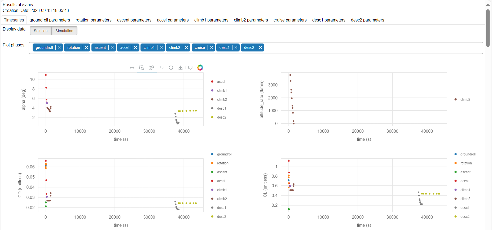
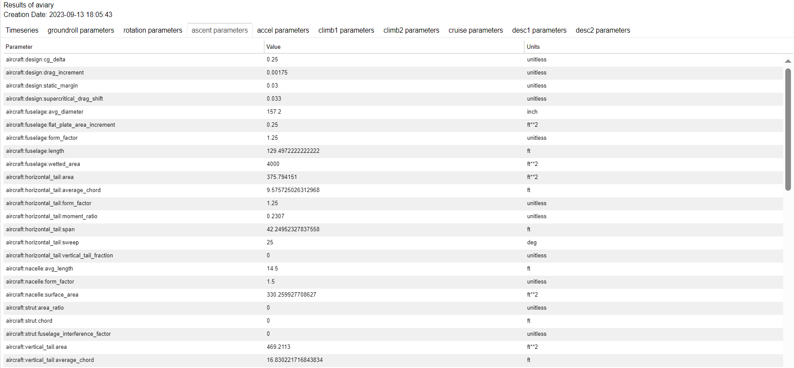

Level 1#
What is level 1#
This part is a tutorial type introduction. We assume users have read Aviary User Interface. In this doc page we discuss Level 1’s interface, but also other details, such as inputs and outputs.
If you have not yet, make sure to install Aviary.
To run Aviary in the Level 1 command-line interface (CLI), type this in a terminal:
!aviary
/usr/share/miniconda/envs/test/lib/python3.12/site-packages/pyoptsparse/pyOpt_MPI.py:68: UserWarning: mpi4py could not be imported. mpi4py is required to use the parallel gradient analysis and parallel objective analysis for non-gradient based optimizers. Continuing using a dummy MPI module from pyOptSparse.
warnings.warn(warn)
/usr/share/miniconda/envs/test/lib/python3.12/site-packages/pyoptsparse/pyOpt_MPI.py:68: UserWarning: mpi4py could not be imported. mpi4py is required to use the parallel gradient analysis and parallel objective analysis for non-gradient based optimizers. Continuing using a dummy MPI module from pyOptSparse.
warnings.warn(warn)
usage: aviary [-h] [--version] ...
aviary Command Line Tools
options:
-h, --help show this help message and exit
--version show version and exit
Tools:
convert_aero_table
Converts FLOPS- or GASP-formatted aero data files into
Aviary csv format.
convert_engine Converts FLOPS- or GASP-formatted engine decks into
Aviary csv format. FLOPS decks are changed from column-
delimited to csv format with added headers. GASP decks
are reorganized into column based csv. T4 is recovered
through calculation. Data points whose T4 exceeds T4max
are removed.
convert_prop_table
Converts GASP-formatted propeller map file into Aviary
csv format.
dashboard Run the Dashboard tool
draw_mission Allows users to draw a mission profile for use in
Aviary.
fortran_to_aviary
Converts legacy Fortran input decks to Aviary csv based
decks
hangar Allows users that pip installed Aviary to download
models from the Aviary hangar
run_mission Runs Aviary using a provided input deck
We’ll now discuss the different parts of the CLI, starting with how to run an Aviary problem.
First level 1 run#
We are ready to run some models. By default, Aviary runs the optimizer for up to 50 iterations. In order to reduce the run time, we will limit the maximum number of iterations to 1. It will be faster for these examples, but you will not get optimal solutions. Issue the following command:
!aviary run_mission models/test_aircraft/aircraft_for_bench_GwGm.csv --optimizer IPOPT --max_iter 1
/usr/share/miniconda/envs/test/lib/python3.12/site-packages/pyoptsparse/pyOpt_MPI.py:68: UserWarning: mpi4py could not be imported. mpi4py is required to use the parallel gradient analysis and parallel objective analysis for non-gradient based optimizers. Continuing using a dummy MPI module from pyOptSparse.
warnings.warn(warn)
Loaded default phase_info for 2dof equations of motion
/home/runner/work/Aviary/Aviary/aviary/utils/preprocessors.py:264: UserWarning: Mount location for engines of type <turbofan_23k_1> not specified. Wing-mounted engines are assumed.
warnings.warn(
--- Constraint Report [traj] ---
--- groundroll ---
None
--- rotation ---
[final] 0.0000e+00 == normal_force [lbf]
--- ascent ---
[final] 5.0000e+02 == altitude [ft]
[path] 0.0000e+00 <= load_factor <= 1.1000e+00 [unitless]
[path] 0.0000e+00 <= fuselage_pitch <= 1.5000e+01 [deg]
--- accel ---
[final] 2.5000e+02 == EAS [kn]
--- climb1 ---
[final] 1.0000e+04 == altitude [ft]
--- climb2 ---
[final] 3.7500e+04 == altitude [ft]
[final] 1.0000e-01 <= altitude_rate [ft/min]
[final] 8.0000e-01 == mach [unitless]
--- cruise ---
None
--- desc1 ---
[final] 1.0000e+04 == altitude [ft]
--- desc2 ---
[final] 1.0000e+03 == altitude [ft]
'rhs_checking' is disabled for 'DirectSolver in 'traj.phases.ascent' <class Phase>' but that solver has redundant adjoint solves. If it is expensive to compute derivatives for this solver, turning on 'rhs_checking' may improve performance.
'rhs_checking' is disabled for 'DirectSolver in 'traj.phases.climb1' <class Phase>' but that solver has redundant adjoint solves. If it is expensive to compute derivatives for this solver, turning on 'rhs_checking' may improve performance.
'rhs_checking' is disabled for 'DirectSolver in 'traj.phases.desc1' <class Phase>' but that solver has redundant adjoint solves. If it is expensive to compute derivatives for this solver, turning on 'rhs_checking' may improve performance.
/usr/share/miniconda/envs/test/lib/python3.12/site-packages/openmdao/recorders/sqlite_recorder.py:226: UserWarning:The existing case recorder file, problem_history.db, is being overwritten.
Model viewer data has already been recorded for Driver.
Model viewer data has already been recorded for Driver.
Full total jacobian for problem 'aircraft_for_bench_GwGm' was computed 3 times, taking 2.21411414399995 seconds.
Total jacobian shape: (238, 212)
Jacobian shape: (238, 212) (7.87% nonzero)
FWD solves: 48 REV solves: 0
Total colors vs. total size: 48 vs 212 (77.36% improvement)
Sparsity computed using tolerance: 1e-25
Time to compute sparsity: 2.2141 sec
Time to compute coloring: 0.1851 sec
Memory to compute coloring: 1.0000 MB
Coloring created on: 2024-08-15 13:40:25
This is Ipopt version 3.14.16, running with linear solver MUMPS 5.7.2.
Number of nonzeros in equality constraint Jacobian...: 2860
Number of nonzeros in inequality constraint Jacobian.: 627
Number of nonzeros in Lagrangian Hessian.............: 0
/usr/share/miniconda/envs/test/lib/python3.12/site-packages/openmdao/core/total_jac.py:1646: DerivativesWarning:Constraints or objectives [('traj.phases.climb2->final_boundary_constraint->mach', inds=[(11, 0)])] cannot be impacted by the design variables of the problem.
Total number of variables............................: 212
variables with only lower bounds: 0
variables with lower and upper bounds: 212
variables with only upper bounds: 0
Total number of equality constraints.................: 204
Total number of inequality constraints...............: 33
inequality constraints with only lower bounds: 1
inequality constraints with lower and upper bounds: 32
inequality constraints with only upper bounds: 0
iter objective inf_pr inf_du lg(mu) ||d|| lg(rg) alpha_du alpha_pr ls
0 5.2731333e+00 1.74e+03 1.75e+01 -5.0 0.00e+00 - 0.00e+00 0.00e+00 0
Number of Iterations....: 1
(scaled) (unscaled)
Objective...............: 4.4311498191428127e+00 4.4311498191428127e+00
Dual infeasibility......: 1.7256638978868750e+01 1.7256638978868750e+01
Constraint violation....: 5.3367031163170147e+01 3.0922810595252224e+02
Variable bound violation: 0.0000000000000000e+00 0.0000000000000000e+00
Complementarity.........: 1.0000016687732632e+05 1.0000016687732632e+05
Overall NLP error.......: 1.0000016687732632e+05 1.0000016687732632e+05
Number of objective function evaluations = 2
Number of objective gradient evaluations = 2
Number of equality constraint evaluations = 2
Number of inequality constraint evaluations = 2
Number of equality constraint Jacobian evaluations = 2
Number of inequality constraint Jacobian evaluations = 2
Number of Lagrangian Hessian evaluations = 0
Total seconds in IPOPT = 2.512
EXIT: Maximum Number of Iterations Exceeded.
minimal_print is not available for this solution
Optimization Problem -- Optimization using pyOpt_sparse
================================================================================
Objective Function: _objfunc
Solution:
--------------------------------------------------------------------------------
Total Time: 2.5137
User Objective Time : 0.6928
User Sensitivity Time : 1.7979
Interface Time : 0.0171
Opt Solver Time: 0.0058
Calls to Objective Function : 3
Calls to Sens Function : 3
Objectives
Index Name Value
0 mission:objectives:fuel 4.431150E+00
Variables (c - continuous, i - integer, d - discrete)
Index Name Type Lower Bound Value Upper Bound Status
0 mission:design:gross_mass_0 c 5.714286E-05 9.943990E-01 2.285714E+00
1 mission:summary:gross_mass_0 c 5.714286E-05 9.943991E-01 2.285714E+00
2 mission:takeoff:ascent_t_initial_0 c 0.000000E+00 5.649452E-01 3.333333E+00
3 mission:takeoff:ascent_duration_0 c 1.000000E-01 5.389460E-01 1.000000E+02
4 tau_gear_0 c 1.000000E-02 2.003481E-01 1.000000E+00
5 tau_flaps_0 c 1.000000E-02 9.687659E-01 1.000000E+00
6 traj.accel.t_duration_0 c 9.950249E-03 2.932374E-01 1.990050E+00
7 traj.accel.states:velocity_0 c 0.000000E+00 5.094470E-01 1.200000E+00
8 traj.accel.states:velocity_1 c 0.000000E+00 8.992014E-01 1.200000E+00
9 traj.accel.states:velocity_2 c 0.000000E+00 1.018244E+00 1.200000E+00
10 traj.accel.states:mass_0 c 0.000000E+00 1.157664E+00 6.666667E+15
11 traj.accel.states:mass_1 c 0.000000E+00 1.157407E+00 6.666667E+15
12 traj.accel.states:mass_2 c 0.000000E+00 1.157048E+00 6.666667E+15
13 traj.accel.states:mass_3 c 0.000000E+00 1.156933E+00 6.666667E+15
14 traj.accel.states:distance_0 c 0.000000E+00 3.426738E-01 3.000000E+01
15 traj.accel.states:distance_1 c 0.000000E+00 5.211041E-01 3.000000E+01
16 traj.accel.states:distance_2 c 0.000000E+00 5.834055E-01 3.000000E+01
17 traj.ascent.states:flight_path_angle_0 c -9.999996E+00 -4.626086E-03 1.999999E+01
18 traj.ascent.states:flight_path_angle_1 c -9.999996E+00 -1.092398E-02 1.999999E+01
19 traj.ascent.states:flight_path_angle_2 c -9.999996E+00 -1.682164E-02 1.999999E+01
20 traj.ascent.states:flight_path_angle_3 c -9.999996E+00 -3.727895E-03 1.999999E+01
21 traj.ascent.states:flight_path_angle_4 c -9.999996E+00 3.556842E-02 1.999999E+01
22 traj.ascent.states:flight_path_angle_5 c -9.999996E+00 4.650849E-02 1.999999E+01
23 traj.ascent.states:flight_path_angle_6 c -9.999996E+00 6.076320E-02 1.999999E+01
24 traj.ascent.states:flight_path_angle_7 c -9.999996E+00 7.400493E-02 1.999999E+01
25 traj.ascent.states:flight_path_angle_8 c -9.999996E+00 8.149149E-02 1.999999E+01
26 traj.ascent.states:flight_path_angle_9 c -9.999996E+00 1.076026E-01 1.999999E+01
27 traj.ascent.states:flight_path_angle_10 c -9.999996E+00 1.243951E-01 1.999999E+01
28 traj.ascent.states:flight_path_angle_11 c -9.999996E+00 1.148203E-01 1.999999E+01
29 traj.ascent.states:altitude_0 c 0.000000E+00 5.810780E-01 7.000000E-01
30 traj.ascent.states:altitude_1 c 0.000000E+00 5.770338E-01 7.000000E-01
31 traj.ascent.states:altitude_2 c 0.000000E+00 5.577041E-01 7.000000E-01
32 traj.ascent.states:altitude_3 c 0.000000E+00 5.481303E-01 7.000000E-01
33 traj.ascent.states:altitude_4 c 0.000000E+00 5.220411E-01 7.000000E-01
34 traj.ascent.states:altitude_5 c 0.000000E+00 4.967929E-01 7.000000E-01
35 traj.ascent.states:altitude_6 c 0.000000E+00 4.943664E-01 7.000000E-01
36 traj.ascent.states:altitude_7 c 0.000000E+00 4.902078E-01 7.000000E-01
37 traj.ascent.states:altitude_8 c 0.000000E+00 4.854575E-01 7.000000E-01
38 traj.ascent.states:altitude_9 c 0.000000E+00 4.832187E-01 7.000000E-01
39 traj.ascent.states:altitude_10 c 0.000000E+00 4.859854E-01 7.000000E-01
40 traj.ascent.states:altitude_11 c 0.000000E+00 4.974784E-01 7.000000E-01
41 traj.ascent.states:altitude_12 c 0.000000E+00 5.000000E-01 7.000000E-01
42 traj.ascent.states:velocity_0 c 0.000000E+00 7.739767E-01 3.500000E+00
43 traj.ascent.states:velocity_1 c 0.000000E+00 7.907773E-01 3.500000E+00
44 traj.ascent.states:velocity_2 c 0.000000E+00 7.961330E-01 3.500000E+00
45 traj.ascent.states:velocity_3 c 0.000000E+00 8.113131E-01 3.500000E+00
46 traj.ascent.states:velocity_4 c 0.000000E+00 8.276244E-01 3.500000E+00
47 traj.ascent.states:velocity_5 c 0.000000E+00 8.308725E-01 3.500000E+00
48 traj.ascent.states:velocity_6 c 0.000000E+00 8.382087E-01 3.500000E+00
49 traj.ascent.states:velocity_7 c 0.000000E+00 8.479794E-01 3.500000E+00
50 traj.ascent.states:velocity_8 c 0.000000E+00 8.511055E-01 3.500000E+00
51 traj.ascent.states:velocity_9 c 0.000000E+00 8.552226E-01 3.500000E+00
52 traj.ascent.states:velocity_10 c 0.000000E+00 8.587678E-01 3.500000E+00
53 traj.ascent.states:velocity_11 c 0.000000E+00 8.607038E-01 3.500000E+00
54 traj.ascent.states:mass_0 c 0.000000E+00 1.157792E+00 6.666667E+15
55 traj.ascent.states:mass_1 c 0.000000E+00 1.157780E+00 6.666667E+15
56 traj.ascent.states:mass_2 c 0.000000E+00 1.157765E+00 6.666667E+15
57 traj.ascent.states:mass_3 c 0.000000E+00 1.157760E+00 6.666667E+15
58 traj.ascent.states:mass_4 c 0.000000E+00 1.157749E+00 6.666667E+15
59 traj.ascent.states:mass_5 c 0.000000E+00 1.157733E+00 6.666667E+15
60 traj.ascent.states:mass_6 c 0.000000E+00 1.157728E+00 6.666667E+15
61 traj.ascent.states:mass_7 c 0.000000E+00 1.157717E+00 6.666667E+15
62 traj.ascent.states:mass_8 c 0.000000E+00 1.157701E+00 6.666667E+15
63 traj.ascent.states:mass_9 c 0.000000E+00 1.157696E+00 6.666667E+15
64 traj.ascent.states:mass_10 c 0.000000E+00 1.157685E+00 6.666667E+15
65 traj.ascent.states:mass_11 c 0.000000E+00 1.157669E+00 6.666667E+15
66 traj.ascent.states:mass_12 c 0.000000E+00 1.157664E+00 6.666667E+15
67 traj.ascent.states:distance_0 c 0.000000E+00 5.741155E-01 1.500000E+00
68 traj.ascent.states:distance_1 c 0.000000E+00 5.918565E-01 1.500000E+00
69 traj.ascent.states:distance_2 c 0.000000E+00 5.976502E-01 1.500000E+00
70 traj.ascent.states:distance_3 c 0.000000E+00 6.108962E-01 1.500000E+00
71 traj.ascent.states:distance_4 c 0.000000E+00 6.293216E-01 1.500000E+00
72 traj.ascent.states:distance_5 c 0.000000E+00 6.350905E-01 1.500000E+00
73 traj.ascent.states:distance_6 c 0.000000E+00 6.480063E-01 1.500000E+00
74 traj.ascent.states:distance_7 c 0.000000E+00 6.652360E-01 1.500000E+00
75 traj.ascent.states:distance_8 c 0.000000E+00 6.705483E-01 1.500000E+00
76 traj.ascent.states:distance_9 c 0.000000E+00 6.822659E-01 1.500000E+00
77 traj.ascent.states:distance_10 c 0.000000E+00 6.972654E-01 1.500000E+00
78 traj.ascent.states:distance_11 c 0.000000E+00 7.017248E-01 1.500000E+00
79 traj.ascent.controls:alpha_0 c -6.000000E+00 2.018874E+00 6.000000E+00
80 traj.ascent.controls:alpha_1 c -6.000000E+00 1.207129E+00 6.000000E+00
81 traj.ascent.controls:alpha_2 c -6.000000E+00 8.922528E-01 6.000000E+00
82 traj.ascent.controls:alpha_3 c -6.000000E+00 9.871090E-01 6.000000E+00
83 traj.ascent.controls:alpha_4 c -6.000000E+00 1.216263E+00 6.000000E+00
84 traj.ascent.controls:alpha_5 c -6.000000E+00 1.220045E+00 6.000000E+00
85 traj.ascent.controls:alpha_6 c -6.000000E+00 1.145772E+00 6.000000E+00
86 traj.ascent.controls:alpha_7 c -6.000000E+00 1.005345E+00 6.000000E+00
87 traj.ascent.controls:alpha_8 c -6.000000E+00 1.045373E+00 6.000000E+00
88 traj.ascent.controls:alpha_9 c -6.000000E+00 1.114522E+00 6.000000E+00
89 traj.ascent.controls:alpha_10 c -6.000000E+00 1.165167E+00 6.000000E+00
90 traj.ascent.controls:alpha_11 c -6.000000E+00 7.793137E-01 6.000000E+00
91 traj.climb1.t_duration_0 c 1.818182E-01 1.021291E+00 1.818182E+00
92 traj.climb1.states:altitude_0 c 4.000000E-02 7.178495E-02 1.100000E+00
93 traj.climb1.states:altitude_1 c 4.000000E-02 4.140712E-01 1.100000E+00
94 traj.climb1.states:altitude_2 c 4.000000E-02 8.659479E-01 1.100000E+00
95 traj.climb1.states:altitude_3 c 4.000000E-02 1.000000E+00 1.100000E+00
96 traj.climb1.states:mass_0 c 0.000000E+00 1.156933E+00 6.666667E+15
97 traj.climb1.states:mass_1 c 0.000000E+00 1.155475E+00 6.666667E+15
98 traj.climb1.states:mass_2 c 0.000000E+00 1.153592E+00 6.666667E+15
99 traj.climb1.states:mass_3 c 0.000000E+00 1.153027E+00 6.666667E+15
100 traj.climb1.states:distance_0 c 0.000000E+00 7.182925E-01 5.000000E+01
101 traj.climb1.states:distance_1 c 0.000000E+00 1.344515E+00 5.000000E+01
102 traj.climb1.states:distance_2 c 0.000000E+00 1.552269E+00 5.000000E+01
103 traj.climb2.t_duration_0 c 2.325581E-02 1.300786E-01 1.976744E+00
104 traj.climb2.states:altitude_0 c 3.000000E-01 5.443704E-01 1.333333E+00
105 traj.climb2.states:altitude_1 c 3.000000E-01 7.761775E-01 1.333333E+00
106 traj.climb2.states:altitude_2 c 3.000000E-01 8.378947E-01 1.333333E+00
107 traj.climb2.states:altitude_3 c 3.000000E-01 9.600591E-01 1.333333E+00
108 traj.climb2.states:altitude_4 c 3.000000E-01 1.081703E+00 1.333333E+00
109 traj.climb2.states:altitude_5 c 3.000000E-01 1.113958E+00 1.333333E+00
110 traj.climb2.states:altitude_6 c 3.000000E-01 1.181300E+00 1.333333E+00
111 traj.climb2.states:altitude_7 c 3.000000E-01 1.239915E+00 1.333333E+00
112 traj.climb2.states:altitude_8 c 3.000000E-01 1.250000E+00 1.333333E+00
113 traj.climb2.states:mass_0 c 0.000000E+00 1.153027E+00 6.666667E+15
114 traj.climb2.states:mass_1 c 0.000000E+00 1.150376E+00 6.666667E+15
115 traj.climb2.states:mass_2 c 0.000000E+00 1.147265E+00 6.666667E+15
116 traj.climb2.states:mass_3 c 0.000000E+00 1.146375E+00 6.666667E+15
117 traj.climb2.states:mass_4 c 0.000000E+00 1.144394E+00 6.666667E+15
118 traj.climb2.states:mass_5 c 0.000000E+00 1.141951E+00 6.666667E+15
119 traj.climb2.states:mass_6 c 0.000000E+00 1.141213E+00 6.666667E+15
120 traj.climb2.states:mass_7 c 0.000000E+00 1.139548E+00 6.666667E+15
121 traj.climb2.states:mass_8 c 0.000000E+00 1.137426E+00 6.666667E+15
122 traj.climb2.states:mass_9 c 0.000000E+00 1.136804E+00 6.666667E+15
123 traj.climb2.states:distance_0 c 2.000000E-02 5.539732E-02 2.000000E+00
124 traj.climb2.states:distance_1 c 2.000000E-02 9.314710E-02 2.000000E+00
125 traj.climb2.states:distance_2 c 2.000000E-02 1.060091E-01 2.000000E+00
126 traj.climb2.states:distance_3 c 2.000000E-02 1.369987E-01 2.000000E+00
127 traj.climb2.states:distance_4 c 2.000000E-02 1.827634E-01 2.000000E+00
128 traj.climb2.states:distance_5 c 2.000000E-02 1.978417E-01 2.000000E+00
129 traj.climb2.states:distance_6 c 2.000000E-02 2.336206E-01 2.000000E+00
130 traj.climb2.states:distance_7 c 2.000000E-02 2.824017E-01 2.000000E+00
131 traj.climb2.states:distance_8 c 2.000000E-02 2.966758E-01 2.000000E+00
132 traj.cruise.t_initial_0 c 0.000000E+00 1.705206E+00 1.000000E+02
133 traj.cruise.t_duration_0 c -2.000000E+02 -6.751968E-01 -2.000000E-05
134 traj.desc1.t_duration_0 c 5.000000E-01 9.570682E-01 1.500000E+00
135 traj.desc1.states:altitude_0 c 3.333333E-02 1.253527E+00 1.333333E+00
136 traj.desc1.states:altitude_1 c 3.333333E-02 1.162924E+00 1.333333E+00
137 traj.desc1.states:altitude_2 c 3.333333E-02 1.031835E+00 1.333333E+00
138 traj.desc1.states:altitude_3 c 3.333333E-02 9.879109E-01 1.333333E+00
139 traj.desc1.states:altitude_4 c 3.333333E-02 8.817222E-01 1.333333E+00
140 traj.desc1.states:altitude_5 c 3.333333E-02 7.161986E-01 1.333333E+00
141 traj.desc1.states:altitude_6 c 3.333333E-02 6.576582E-01 1.333333E+00
142 traj.desc1.states:altitude_7 c 3.333333E-02 5.357016E-01 1.333333E+00
143 traj.desc1.states:altitude_8 c 3.333333E-02 3.799402E-01 1.333333E+00
144 traj.desc1.states:altitude_9 c 3.333333E-02 3.333333E-01 1.333333E+00
145 traj.desc1.states:mass_0 c 0.000000E+00 9.768629E-01 7.142857E+15
146 traj.desc1.states:mass_1 c 0.000000E+00 9.768013E-01 7.142857E+15
147 traj.desc1.states:mass_2 c 0.000000E+00 9.767029E-01 7.142857E+15
148 traj.desc1.states:mass_3 c 0.000000E+00 9.766683E-01 7.142857E+15
149 traj.desc1.states:mass_4 c 0.000000E+00 9.765809E-01 7.142857E+15
150 traj.desc1.states:mass_5 c 0.000000E+00 9.764391E-01 7.142857E+15
151 traj.desc1.states:mass_6 c 0.000000E+00 9.763881E-01 7.142857E+15
152 traj.desc1.states:mass_7 c 0.000000E+00 9.762644E-01 7.142857E+15
153 traj.desc1.states:mass_8 c 0.000000E+00 9.760750E-01 7.142857E+15
154 traj.desc1.states:mass_9 c 0.000000E+00 9.760102E-01 7.142857E+15
155 traj.desc1.states:distance_0 c 8.163265E-01 9.735102E-01 1.360544E+00
156 traj.desc1.states:distance_1 c 8.163265E-01 9.768031E-01 1.360544E+00
157 traj.desc1.states:distance_2 c 8.163265E-01 9.778594E-01 1.360544E+00
158 traj.desc1.states:distance_3 c 8.163265E-01 9.802985E-01 1.360544E+00
159 traj.desc1.states:distance_4 c 8.163265E-01 9.837261E-01 1.360544E+00
160 traj.desc1.states:distance_5 c 8.163265E-01 9.848290E-01 1.360544E+00
161 traj.desc1.states:distance_6 c 8.163265E-01 9.871990E-01 1.360544E+00
162 traj.desc1.states:distance_7 c 8.163265E-01 9.902542E-01 1.360544E+00
163 traj.desc1.states:distance_8 c 8.163265E-01 9.911760E-01 1.360544E+00
164 traj.desc2.t_duration_0 c 3.921569E-02 1.691212E-01 1.960784E+00
165 traj.desc2.states:altitude_0 c -5.555556E-02 9.201160E-01 1.111111E+00
166 traj.desc2.states:altitude_1 c -5.555556E-02 7.517109E-01 1.111111E+00
167 traj.desc2.states:altitude_2 c -5.555556E-02 5.349794E-01 1.111111E+00
168 traj.desc2.states:altitude_3 c -5.555556E-02 3.160728E-01 1.111111E+00
169 traj.desc2.states:altitude_4 c -5.555556E-02 1.365397E-01 1.111111E+00
170 traj.desc2.states:altitude_5 c -5.555556E-02 2.674479E-02 1.111111E+00
171 traj.desc2.states:altitude_6 c -5.555556E-02 -5.026141E-13 1.111111E+00
172 traj.desc2.states:mass_0 c 0.000000E+00 9.109428E-01 6.666667E+15
173 traj.desc2.states:mass_1 c 0.000000E+00 9.108837E-01 6.666667E+15
174 traj.desc2.states:mass_2 c 0.000000E+00 9.107517E-01 6.666667E+15
175 traj.desc2.states:mass_3 c 0.000000E+00 9.105658E-01 6.666667E+15
176 traj.desc2.states:mass_4 c 0.000000E+00 9.103582E-01 6.666667E+15
177 traj.desc2.states:mass_5 c 0.000000E+00 9.101715E-01 6.666667E+15
178 traj.desc2.states:mass_6 c 0.000000E+00 9.100495E-01 6.666667E+15
179 traj.desc2.states:mass_7 c 0.000000E+00 9.100189E-01 6.666667E+15
180 traj.desc2.states:distance_0 c 0.000000E+00 1.041457E+00 1.428571E+00
181 traj.desc2.states:distance_1 c 0.000000E+00 1.042990E+00 1.428571E+00
182 traj.desc2.states:distance_2 c 0.000000E+00 1.044981E+00 1.428571E+00
183 traj.desc2.states:distance_3 c 0.000000E+00 1.047016E+00 1.428571E+00
184 traj.desc2.states:distance_4 c 0.000000E+00 1.048704E+00 1.428571E+00
185 traj.desc2.states:distance_5 c 0.000000E+00 1.049745E+00 1.428571E+00
186 traj.desc2.states:distance_6 c 0.000000E+00 1.050000E+00 1.428571E+00
187 traj.groundroll.t_duration_0 c 1.980198E-02 7.177160E-01 1.980198E+00
188 traj.groundroll.states:velocity_0 c 0.000000E+00 3.913302E-01 6.666667E+00
189 traj.groundroll.states:velocity_1 c 0.000000E+00 8.499433E-01 6.666667E+00
190 traj.groundroll.states:velocity_2 c 0.000000E+00 9.751811E-01 6.666667E+00
191 traj.groundroll.states:mass_0 c 0.000000E+00 1.158743E+00 6.666667E+15
192 traj.groundroll.states:mass_1 c 0.000000E+00 1.158434E+00 6.666667E+15
193 traj.groundroll.states:mass_2 c 0.000000E+00 1.158004E+00 6.666667E+15
194 traj.groundroll.states:mass_3 c 0.000000E+00 1.157866E+00 6.666667E+15
195 traj.groundroll.states:distance_0 c 0.000000E+00 2.205859E-01 3.333333E+00
196 traj.groundroll.states:distance_1 c 0.000000E+00 1.170944E+00 3.333333E+00
197 traj.groundroll.states:distance_2 c 0.000000E+00 1.605844E+00 3.333333E+00
198 traj.rotation.t_duration_0 c 1.980198E-02 6.002759E-02 1.980198E+00
199 traj.rotation.states:alpha_0 c 0.000000E+00 1.251063E-02 1.000000E+00
200 traj.rotation.states:alpha_1 c 0.000000E+00 2.977265E-02 1.000000E+00
201 traj.rotation.states:alpha_2 c 0.000000E+00 3.523606E-02 1.000000E+00
202 traj.rotation.states:velocity_0 c 0.000000E+00 1.497148E+00 1.000000E+01
203 traj.rotation.states:velocity_1 c 0.000000E+00 1.543463E+00 1.000000E+01
204 traj.rotation.states:velocity_2 c 0.000000E+00 1.557763E+00 1.000000E+01
205 traj.rotation.states:mass_0 c 0.000000E+00 1.157866E+00 6.666667E+15
206 traj.rotation.states:mass_1 c 0.000000E+00 1.157840E+00 6.666667E+15
207 traj.rotation.states:mass_2 c 0.000000E+00 1.157803E+00 6.666667E+15
208 traj.rotation.states:mass_3 c 0.000000E+00 1.157792E+00 6.666667E+15
209 traj.rotation.states:distance_0 c 0.000000E+00 1.018155E+00 2.000000E+00
210 traj.rotation.states:distance_1 c 0.000000E+00 1.095954E+00 2.000000E+00
211 traj.rotation.states:distance_2 c 0.000000E+00 1.121134E+00 2.000000E+00
Constraints (i - inequality, e - equality)
Index Name Type Lower Value Upper Status Lagrange Multiplier (N/A)
0 mission:constraints:range_residual e 0.000000E+00 1.356648E-09 0.000000E+00 9.00000E+100
1 h_fit.h_init_gear e 1.000000E+00 -3.082281E+02 1.000000E+00 E 9.00000E+100
2 h_fit.h_init_flaps e 1.000000E+00 -1.976798E+01 1.000000E+00 E 9.00000E+100
3 groundroll_boundary.velocity e 0.000000E+00 3.235167E-06 0.000000E+00 E 9.00000E+100
4 gtow_constraint.GTOW e 0.000000E+00 -4.671241E-08 0.000000E+00 9.00000E+100
5 link_taxi_groundroll.mass e 0.000000E+00 -3.447261E-10 0.000000E+00 9.00000E+100
6 mission:constraints:mass_residual e 0.000000E+00 8.778167E-07 0.000000E+00 9.00000E+100
7 traj.linkages.groundroll:mass_final|rotation:mass_initial e 0.000000E+00 -4.860340E-08 0.000000E+00 9.00000E+100
8 traj.linkages.rotation:mass_final|ascent:mass_initial e 0.000000E+00 -1.241453E-06 0.000000E+00 E 9.00000E+100
9 traj.linkages.rotation:alpha_final|ascent:alpha_initial e 0.000000E+00 3.162477E-07 0.000000E+00 9.00000E+100
10 traj.linkages.ascent:mass_final|accel:mass_initial e 0.000000E+00 -1.957495E-06 0.000000E+00 E 9.00000E+100
11 traj.linkages.accel:mass_final|climb1:mass_initial e 0.000000E+00 -1.959706E-06 0.000000E+00 E 9.00000E+100
12 traj.linkages.climb1:mass_final|climb2:mass_initial e 0.000000E+00 -1.975393E-06 0.000000E+00 E 9.00000E+100
13 traj.linkages.climb2:mass_final|cruise:mass_initial e 0.000000E+00 -9.402508E-08 0.000000E+00 9.00000E+100
14 traj.linkages.cruise:mass_final|desc1:mass_initial e 0.000000E+00 -1.169291E-07 0.000000E+00 9.00000E+100
15 traj.linkages.desc1:mass_final|desc2:mass_initial e 0.000000E+00 -2.629065E-06 0.000000E+00 E 9.00000E+100
16 traj.phases.accel->final_boundary_constraint->EAS e 1.000000E+00 1.000000E+00 1.000000E+00 9.00000E+100
17 traj.accel.collocation_constraint.defects:velocity e 0.000000E+00 1.466024E-03 0.000000E+00 E 9.00000E+100
18 traj.accel.collocation_constraint.defects:velocity e 0.000000E+00 -1.303058E-04 0.000000E+00 E 9.00000E+100
19 traj.accel.collocation_constraint.defects:velocity e 0.000000E+00 2.453034E-05 0.000000E+00 E 9.00000E+100
20 traj.accel.collocation_constraint.defects:mass e 0.000000E+00 -8.092711E-07 0.000000E+00 9.00000E+100
21 traj.accel.collocation_constraint.defects:mass e 0.000000E+00 -3.709292E-07 0.000000E+00 9.00000E+100
22 traj.accel.collocation_constraint.defects:mass e 0.000000E+00 9.823332E-08 0.000000E+00 9.00000E+100
23 traj.accel.collocation_constraint.defects:distance e 0.000000E+00 5.883232E-03 0.000000E+00 E 9.00000E+100
24 traj.accel.collocation_constraint.defects:distance e 0.000000E+00 3.263701E-03 0.000000E+00 E 9.00000E+100
25 traj.accel.collocation_constraint.defects:distance e 0.000000E+00 7.047886E-07 0.000000E+00 9.00000E+100
26 traj.phases.ascent->final_boundary_constraint->altitude e 1.000000E+00 1.000000E+00 1.000000E+00 9.00000E+100
27 traj.ascent.collocation_constraint.defects:flight_path_angle e 0.000000E+00 1.381499E-02 0.000000E+00 E 9.00000E+100
28 traj.ascent.collocation_constraint.defects:flight_path_angle e 0.000000E+00 4.442595E-02 0.000000E+00 E 9.00000E+100
29 traj.ascent.collocation_constraint.defects:flight_path_angle e 0.000000E+00 3.854077E-02 0.000000E+00 E 9.00000E+100
30 traj.ascent.collocation_constraint.defects:flight_path_angle e 0.000000E+00 4.924440E-02 0.000000E+00 E 9.00000E+100
31 traj.ascent.collocation_constraint.defects:flight_path_angle e 0.000000E+00 7.504536E-02 0.000000E+00 E 9.00000E+100
32 traj.ascent.collocation_constraint.defects:flight_path_angle e 0.000000E+00 7.823223E-02 0.000000E+00 E 9.00000E+100
33 traj.ascent.collocation_constraint.defects:flight_path_angle e 0.000000E+00 7.088848E-02 0.000000E+00 E 9.00000E+100
34 traj.ascent.collocation_constraint.defects:flight_path_angle e 0.000000E+00 5.663989E-02 0.000000E+00 E 9.00000E+100
35 traj.ascent.collocation_constraint.defects:flight_path_angle e 0.000000E+00 6.085858E-02 0.000000E+00 E 9.00000E+100
36 traj.ascent.collocation_constraint.defects:flight_path_angle e 0.000000E+00 6.842115E-02 0.000000E+00 E 9.00000E+100
37 traj.ascent.collocation_constraint.defects:flight_path_angle e 0.000000E+00 7.407850E-02 0.000000E+00 E 9.00000E+100
38 traj.ascent.collocation_constraint.defects:flight_path_angle e 0.000000E+00 3.130060E-02 0.000000E+00 E 9.00000E+100
39 traj.ascent.collocation_constraint.defects:altitude e 0.000000E+00 7.940965E-09 0.000000E+00 9.00000E+100
40 traj.ascent.collocation_constraint.defects:altitude e 0.000000E+00 -1.066095E-02 0.000000E+00 E 9.00000E+100
41 traj.ascent.collocation_constraint.defects:altitude e 0.000000E+00 -2.617823E-02 0.000000E+00 E 9.00000E+100
42 traj.ascent.collocation_constraint.defects:altitude e 0.000000E+00 -3.385357E-02 0.000000E+00 E 9.00000E+100
43 traj.ascent.collocation_constraint.defects:altitude e 0.000000E+00 -3.402294E-02 0.000000E+00 E 9.00000E+100
44 traj.ascent.collocation_constraint.defects:altitude e 0.000000E+00 -1.995873E-02 0.000000E+00 E 9.00000E+100
45 traj.ascent.collocation_constraint.defects:altitude e 0.000000E+00 -1.652536E-02 0.000000E+00 E 9.00000E+100
46 traj.ascent.collocation_constraint.defects:altitude e 0.000000E+00 -1.616105E-02 0.000000E+00 E 9.00000E+100
47 traj.ascent.collocation_constraint.defects:altitude e 0.000000E+00 -2.053756E-02 0.000000E+00 E 9.00000E+100
48 traj.ascent.collocation_constraint.defects:altitude e 0.000000E+00 -1.960608E-02 0.000000E+00 E 9.00000E+100
49 traj.ascent.collocation_constraint.defects:altitude e 0.000000E+00 -1.111578E-02 0.000000E+00 E 9.00000E+100
50 traj.ascent.collocation_constraint.defects:altitude e 0.000000E+00 -1.410606E-02 0.000000E+00 E 9.00000E+100
51 traj.ascent.collocation_constraint.defects:velocity e 0.000000E+00 -3.529457E-02 0.000000E+00 E 9.00000E+100
52 traj.ascent.collocation_constraint.defects:velocity e 0.000000E+00 -3.526801E-03 0.000000E+00 E 9.00000E+100
53 traj.ascent.collocation_constraint.defects:velocity e 0.000000E+00 7.044335E-03 0.000000E+00 E 9.00000E+100
54 traj.ascent.collocation_constraint.defects:velocity e 0.000000E+00 9.627000E-03 0.000000E+00 E 9.00000E+100
55 traj.ascent.collocation_constraint.defects:velocity e 0.000000E+00 8.875448E-03 0.000000E+00 E 9.00000E+100
56 traj.ascent.collocation_constraint.defects:velocity e 0.000000E+00 3.748083E-03 0.000000E+00 E 9.00000E+100
57 traj.ascent.collocation_constraint.defects:velocity e 0.000000E+00 2.753718E-03 0.000000E+00 E 9.00000E+100
58 traj.ascent.collocation_constraint.defects:velocity e 0.000000E+00 2.922109E-03 0.000000E+00 E 9.00000E+100
59 traj.ascent.collocation_constraint.defects:velocity e 0.000000E+00 3.856970E-03 0.000000E+00 E 9.00000E+100
60 traj.ascent.collocation_constraint.defects:velocity e 0.000000E+00 3.182420E-03 0.000000E+00 E 9.00000E+100
61 traj.ascent.collocation_constraint.defects:velocity e 0.000000E+00 -3.701064E-07 0.000000E+00 9.00000E+100
62 traj.ascent.collocation_constraint.defects:velocity e 0.000000E+00 1.856455E-03 0.000000E+00 E 9.00000E+100
63 traj.ascent.collocation_constraint.defects:mass e 0.000000E+00 5.605959E-07 0.000000E+00 9.00000E+100
64 traj.ascent.collocation_constraint.defects:mass e 0.000000E+00 6.974808E-07 0.000000E+00 9.00000E+100
65 traj.ascent.collocation_constraint.defects:mass e 0.000000E+00 6.353634E-07 0.000000E+00 9.00000E+100
66 traj.ascent.collocation_constraint.defects:mass e 0.000000E+00 5.633021E-07 0.000000E+00 9.00000E+100
67 traj.ascent.collocation_constraint.defects:mass e 0.000000E+00 5.768348E-07 0.000000E+00 9.00000E+100
68 traj.ascent.collocation_constraint.defects:mass e 0.000000E+00 4.699609E-07 0.000000E+00 9.00000E+100
69 traj.ascent.collocation_constraint.defects:mass e 0.000000E+00 3.944397E-07 0.000000E+00 9.00000E+100
70 traj.ascent.collocation_constraint.defects:mass e 0.000000E+00 4.540632E-07 0.000000E+00 9.00000E+100
71 traj.ascent.collocation_constraint.defects:mass e 0.000000E+00 3.782716E-07 0.000000E+00 9.00000E+100
72 traj.ascent.collocation_constraint.defects:mass e 0.000000E+00 2.965305E-07 0.000000E+00 9.00000E+100
73 traj.ascent.collocation_constraint.defects:mass e 0.000000E+00 3.858801E-07 0.000000E+00 9.00000E+100
74 traj.ascent.collocation_constraint.defects:mass e 0.000000E+00 3.524642E-07 0.000000E+00 9.00000E+100
75 traj.ascent.collocation_constraint.defects:distance e 0.000000E+00 2.389845E-03 0.000000E+00 E 9.00000E+100
76 traj.ascent.collocation_constraint.defects:distance e 0.000000E+00 7.144695E-04 0.000000E+00 E 9.00000E+100
77 traj.ascent.collocation_constraint.defects:distance e 0.000000E+00 4.073997E-04 0.000000E+00 E 9.00000E+100
78 traj.ascent.collocation_constraint.defects:distance e 0.000000E+00 3.397563E-04 0.000000E+00 E 9.00000E+100
79 traj.ascent.collocation_constraint.defects:distance e 0.000000E+00 3.532249E-04 0.000000E+00 E 9.00000E+100
80 traj.ascent.collocation_constraint.defects:distance e 0.000000E+00 -1.198386E-04 0.000000E+00 E 9.00000E+100
81 traj.ascent.collocation_constraint.defects:distance e 0.000000E+00 -4.290442E-04 0.000000E+00 E 9.00000E+100
82 traj.ascent.collocation_constraint.defects:distance e 0.000000E+00 -1.093307E-03 0.000000E+00 E 9.00000E+100
83 traj.ascent.collocation_constraint.defects:distance e 0.000000E+00 -1.991751E-03 0.000000E+00 E 9.00000E+100
84 traj.ascent.collocation_constraint.defects:distance e 0.000000E+00 -2.296795E-03 0.000000E+00 E 9.00000E+100
85 traj.ascent.collocation_constraint.defects:distance e 0.000000E+00 -3.331098E-03 0.000000E+00 E 9.00000E+100
86 traj.ascent.collocation_constraint.defects:distance e 0.000000E+00 -4.772434E-03 0.000000E+00 E 9.00000E+100
87 traj.ascent.continuity_comp.defect_control_rates:alpha_rate e 0.000000E+00 -3.828106E-09 0.000000E+00 9.00000E+100
88 traj.ascent.continuity_comp.defect_control_rates:alpha_rate e 0.000000E+00 3.550688E-09 0.000000E+00 9.00000E+100
89 traj.ascent.continuity_comp.defect_control_rates:alpha_rate e 0.000000E+00 2.607612E-09 0.000000E+00 9.00000E+100
90 traj.ascent.continuity_comp.defect_controls:alpha e 0.000000E+00 -7.028364E-09 0.000000E+00 9.00000E+100
91 traj.ascent.continuity_comp.defect_controls:alpha e 0.000000E+00 2.380890E-08 0.000000E+00 9.00000E+100
92 traj.ascent.continuity_comp.defect_controls:alpha e 0.000000E+00 6.786871E-09 0.000000E+00 9.00000E+100
93 traj.phases.climb1->final_boundary_constraint->altitude e 1.000000E+00 1.000000E+00 1.000000E+00 9.00000E+100
94 traj.climb1.collocation_constraint.defects:altitude e 0.000000E+00 1.242328E-04 0.000000E+00 E 9.00000E+100
95 traj.climb1.collocation_constraint.defects:altitude e 0.000000E+00 3.527555E-04 0.000000E+00 E 9.00000E+100
96 traj.climb1.collocation_constraint.defects:altitude e 0.000000E+00 -2.423377E-04 0.000000E+00 E 9.00000E+100
97 traj.climb1.collocation_constraint.defects:mass e 0.000000E+00 -2.273476E-06 0.000000E+00 E 9.00000E+100
98 traj.climb1.collocation_constraint.defects:mass e 0.000000E+00 -2.441514E-06 0.000000E+00 E 9.00000E+100
99 traj.climb1.collocation_constraint.defects:mass e 0.000000E+00 -8.811325E-07 0.000000E+00 9.00000E+100
100 traj.climb1.collocation_constraint.defects:distance e 0.000000E+00 -5.548332E-04 0.000000E+00 E 9.00000E+100
101 traj.climb1.collocation_constraint.defects:distance e 0.000000E+00 -7.383294E-04 0.000000E+00 E 9.00000E+100
102 traj.climb1.collocation_constraint.defects:distance e 0.000000E+00 -3.944894E-04 0.000000E+00 E 9.00000E+100
103 traj.phases.climb2->final_boundary_constraint->altitude e 1.000000E+00 1.000000E+00 1.000000E+00 9.00000E+100
104 traj.phases.climb2->final_boundary_constraint->mach e 8.000000E-01 8.000000E-01 8.000000E-01 9.00000E+100
105 traj.climb2.collocation_constraint.defects:altitude e 0.000000E+00 -4.859103E-04 0.000000E+00 E 9.00000E+100
106 traj.climb2.collocation_constraint.defects:altitude e 0.000000E+00 -5.370004E-03 0.000000E+00 E 9.00000E+100
107 traj.climb2.collocation_constraint.defects:altitude e 0.000000E+00 -6.525703E-03 0.000000E+00 E 9.00000E+100
108 traj.climb2.collocation_constraint.defects:altitude e 0.000000E+00 4.017828E-03 0.000000E+00 E 9.00000E+100
109 traj.climb2.collocation_constraint.defects:altitude e 0.000000E+00 -1.221765E-02 0.000000E+00 E 9.00000E+100
110 traj.climb2.collocation_constraint.defects:altitude e 0.000000E+00 -1.292835E-02 0.000000E+00 E 9.00000E+100
111 traj.climb2.collocation_constraint.defects:altitude e 0.000000E+00 4.256983E-03 0.000000E+00 E 9.00000E+100
112 traj.climb2.collocation_constraint.defects:altitude e 0.000000E+00 7.143346E-03 0.000000E+00 E 9.00000E+100
113 traj.climb2.collocation_constraint.defects:altitude e 0.000000E+00 -2.613149E-03 0.000000E+00 E 9.00000E+100
114 traj.climb2.collocation_constraint.defects:mass e 0.000000E+00 2.927344E-08 0.000000E+00 9.00000E+100
115 traj.climb2.collocation_constraint.defects:mass e 0.000000E+00 5.217941E-05 0.000000E+00 E 9.00000E+100
116 traj.climb2.collocation_constraint.defects:mass e 0.000000E+00 1.342121E-04 0.000000E+00 E 9.00000E+100
117 traj.climb2.collocation_constraint.defects:mass e 0.000000E+00 -1.668424E-05 0.000000E+00 E 9.00000E+100
118 traj.climb2.collocation_constraint.defects:mass e 0.000000E+00 8.423671E-05 0.000000E+00 E 9.00000E+100
119 traj.climb2.collocation_constraint.defects:mass e 0.000000E+00 1.048570E-04 0.000000E+00 E 9.00000E+100
120 traj.climb2.collocation_constraint.defects:mass e 0.000000E+00 1.798522E-05 0.000000E+00 E 9.00000E+100
121 traj.climb2.collocation_constraint.defects:mass e 0.000000E+00 -2.568820E-05 0.000000E+00 E 9.00000E+100
122 traj.climb2.collocation_constraint.defects:mass e 0.000000E+00 2.066112E-05 0.000000E+00 E 9.00000E+100
123 traj.climb2.collocation_constraint.defects:distance e 0.000000E+00 4.935525E-07 0.000000E+00 9.00000E+100
124 traj.climb2.collocation_constraint.defects:distance e 0.000000E+00 2.196018E-04 0.000000E+00 E 9.00000E+100
125 traj.climb2.collocation_constraint.defects:distance e 0.000000E+00 3.185300E-04 0.000000E+00 E 9.00000E+100
126 traj.climb2.collocation_constraint.defects:distance e 0.000000E+00 3.216953E-04 0.000000E+00 E 9.00000E+100
127 traj.climb2.collocation_constraint.defects:distance e 0.000000E+00 3.463517E-04 0.000000E+00 E 9.00000E+100
128 traj.climb2.collocation_constraint.defects:distance e 0.000000E+00 3.717037E-04 0.000000E+00 E 9.00000E+100
129 traj.climb2.collocation_constraint.defects:distance e 0.000000E+00 1.008786E-03 0.000000E+00 E 9.00000E+100
130 traj.climb2.collocation_constraint.defects:distance e 0.000000E+00 3.360747E-03 0.000000E+00 E 9.00000E+100
131 traj.climb2.collocation_constraint.defects:distance e 0.000000E+00 -2.039436E-04 0.000000E+00 E 9.00000E+100
132 traj.phases.desc1->final_boundary_constraint->altitude e 1.000000E+00 1.000000E+00 1.000000E+00 9.00000E+100
133 traj.desc1.collocation_constraint.defects:altitude e 0.000000E+00 2.995987E-05 0.000000E+00 E 9.00000E+100
134 traj.desc1.collocation_constraint.defects:altitude e 0.000000E+00 -7.627327E-05 0.000000E+00 E 9.00000E+100
135 traj.desc1.collocation_constraint.defects:altitude e 0.000000E+00 -3.298553E-04 0.000000E+00 E 9.00000E+100
136 traj.desc1.collocation_constraint.defects:altitude e 0.000000E+00 -3.746209E-04 0.000000E+00 E 9.00000E+100
137 traj.desc1.collocation_constraint.defects:altitude e 0.000000E+00 -5.716479E-04 0.000000E+00 E 9.00000E+100
138 traj.desc1.collocation_constraint.defects:altitude e 0.000000E+00 -2.646477E-03 0.000000E+00 E 9.00000E+100
139 traj.desc1.collocation_constraint.defects:altitude e 0.000000E+00 1.097687E-04 0.000000E+00 E 9.00000E+100
140 traj.desc1.collocation_constraint.defects:altitude e 0.000000E+00 -5.843711E-05 0.000000E+00 E 9.00000E+100
141 traj.desc1.collocation_constraint.defects:altitude e 0.000000E+00 -1.165198E-04 0.000000E+00 E 9.00000E+100
142 traj.desc1.collocation_constraint.defects:mass e 0.000000E+00 -1.711977E-08 0.000000E+00 9.00000E+100
143 traj.desc1.collocation_constraint.defects:mass e 0.000000E+00 -1.650396E-07 0.000000E+00 9.00000E+100
144 traj.desc1.collocation_constraint.defects:mass e 0.000000E+00 -2.011604E-07 0.000000E+00 9.00000E+100
145 traj.desc1.collocation_constraint.defects:mass e 0.000000E+00 -7.870338E-07 0.000000E+00 9.00000E+100
146 traj.desc1.collocation_constraint.defects:mass e 0.000000E+00 -7.857327E-07 0.000000E+00 9.00000E+100
147 traj.desc1.collocation_constraint.defects:mass e 0.000000E+00 -8.216830E-07 0.000000E+00 9.00000E+100
148 traj.desc1.collocation_constraint.defects:mass e 0.000000E+00 -2.735231E-07 0.000000E+00 9.00000E+100
149 traj.desc1.collocation_constraint.defects:mass e 0.000000E+00 7.430005E-08 0.000000E+00 9.00000E+100
150 traj.desc1.collocation_constraint.defects:mass e 0.000000E+00 1.394864E-07 0.000000E+00 9.00000E+100
151 traj.desc1.collocation_constraint.defects:distance e 0.000000E+00 1.042669E-03 0.000000E+00 E 9.00000E+100
152 traj.desc1.collocation_constraint.defects:distance e 0.000000E+00 2.659883E-04 0.000000E+00 E 9.00000E+100
153 traj.desc1.collocation_constraint.defects:distance e 0.000000E+00 3.240339E-05 0.000000E+00 E 9.00000E+100
154 traj.desc1.collocation_constraint.defects:distance e 0.000000E+00 9.198819E-05 0.000000E+00 E 9.00000E+100
155 traj.desc1.collocation_constraint.defects:distance e 0.000000E+00 9.523323E-05 0.000000E+00 E 9.00000E+100
156 traj.desc1.collocation_constraint.defects:distance e 0.000000E+00 5.804860E-04 0.000000E+00 E 9.00000E+100
157 traj.desc1.collocation_constraint.defects:distance e 0.000000E+00 -1.626059E-04 0.000000E+00 E 9.00000E+100
158 traj.desc1.collocation_constraint.defects:distance e 0.000000E+00 -4.108183E-05 0.000000E+00 E 9.00000E+100
159 traj.desc1.collocation_constraint.defects:distance e 0.000000E+00 4.867682E-06 0.000000E+00 E 9.00000E+100
160 traj.phases.desc2->final_boundary_constraint->altitude e 1.000000E+00 1.000000E+00 1.000000E+00 9.00000E+100
161 traj.desc2.collocation_constraint.defects:altitude e 0.000000E+00 6.782287E-05 0.000000E+00 E 9.00000E+100
162 traj.desc2.collocation_constraint.defects:altitude e 0.000000E+00 1.655245E-04 0.000000E+00 E 9.00000E+100
163 traj.desc2.collocation_constraint.defects:altitude e 0.000000E+00 3.146492E-04 0.000000E+00 E 9.00000E+100
164 traj.desc2.collocation_constraint.defects:altitude e 0.000000E+00 3.387549E-04 0.000000E+00 E 9.00000E+100
165 traj.desc2.collocation_constraint.defects:altitude e 0.000000E+00 3.234000E-04 0.000000E+00 E 9.00000E+100
166 traj.desc2.collocation_constraint.defects:altitude e 0.000000E+00 1.845461E-04 0.000000E+00 E 9.00000E+100
167 traj.desc2.collocation_constraint.defects:altitude e 0.000000E+00 5.868740E-05 0.000000E+00 E 9.00000E+100
168 traj.desc2.collocation_constraint.defects:mass e 0.000000E+00 7.154121E-09 0.000000E+00 9.00000E+100
169 traj.desc2.collocation_constraint.defects:mass e 0.000000E+00 -7.653421E-08 0.000000E+00 9.00000E+100
170 traj.desc2.collocation_constraint.defects:mass e 0.000000E+00 -2.648901E-07 0.000000E+00 9.00000E+100
171 traj.desc2.collocation_constraint.defects:mass e 0.000000E+00 -1.353699E-07 0.000000E+00 9.00000E+100
172 traj.desc2.collocation_constraint.defects:mass e 0.000000E+00 -3.501590E-07 0.000000E+00 9.00000E+100
173 traj.desc2.collocation_constraint.defects:mass e 0.000000E+00 -2.017202E-07 0.000000E+00 9.00000E+100
174 traj.desc2.collocation_constraint.defects:mass e 0.000000E+00 -3.095276E-08 0.000000E+00 9.00000E+100
175 traj.desc2.collocation_constraint.defects:distance e 0.000000E+00 5.400669E-08 0.000000E+00 9.00000E+100
176 traj.desc2.collocation_constraint.defects:distance e 0.000000E+00 -2.643921E-05 0.000000E+00 E 9.00000E+100
177 traj.desc2.collocation_constraint.defects:distance e 0.000000E+00 -6.616291E-05 0.000000E+00 E 9.00000E+100
178 traj.desc2.collocation_constraint.defects:distance e 0.000000E+00 -8.608808E-05 0.000000E+00 E 9.00000E+100
179 traj.desc2.collocation_constraint.defects:distance e 0.000000E+00 -7.252593E-05 0.000000E+00 E 9.00000E+100
180 traj.desc2.collocation_constraint.defects:distance e 0.000000E+00 -3.832838E-05 0.000000E+00 E 9.00000E+100
181 traj.desc2.collocation_constraint.defects:distance e 0.000000E+00 -8.281398E-06 0.000000E+00 E 9.00000E+100
182 traj.groundroll.collocation_constraint.defects:velocity e 0.000000E+00 -6.287011E-05 0.000000E+00 E 9.00000E+100
183 traj.groundroll.collocation_constraint.defects:velocity e 0.000000E+00 -9.912519E-04 0.000000E+00 E 9.00000E+100
184 traj.groundroll.collocation_constraint.defects:velocity e 0.000000E+00 -9.025464E-04 0.000000E+00 E 9.00000E+100
185 traj.groundroll.collocation_constraint.defects:mass e 0.000000E+00 -1.219028E-09 0.000000E+00 9.00000E+100
186 traj.groundroll.collocation_constraint.defects:mass e 0.000000E+00 -4.088989E-08 0.000000E+00 9.00000E+100
187 traj.groundroll.collocation_constraint.defects:mass e 0.000000E+00 -7.635390E-08 0.000000E+00 9.00000E+100
188 traj.groundroll.collocation_constraint.defects:distance e 0.000000E+00 -1.324746E-09 0.000000E+00 9.00000E+100
189 traj.groundroll.collocation_constraint.defects:distance e 0.000000E+00 8.291725E-03 0.000000E+00 E 9.00000E+100
190 traj.groundroll.collocation_constraint.defects:distance e 0.000000E+00 6.939454E-03 0.000000E+00 E 9.00000E+100
191 traj.phases.rotation->final_boundary_constraint->normal_force e 0.000000E+00 0.000000E+00 0.000000E+00 9.00000E+100
192 traj.rotation.collocation_constraint.defects:alpha e 0.000000E+00 -7.133076E-08 0.000000E+00 9.00000E+100
193 traj.rotation.collocation_constraint.defects:alpha e 0.000000E+00 -3.268809E-07 0.000000E+00 9.00000E+100
194 traj.rotation.collocation_constraint.defects:alpha e 0.000000E+00 -2.368973E-07 0.000000E+00 9.00000E+100
195 traj.rotation.collocation_constraint.defects:velocity e 0.000000E+00 -3.695076E-04 0.000000E+00 E 9.00000E+100
196 traj.rotation.collocation_constraint.defects:velocity e 0.000000E+00 -5.073115E-04 0.000000E+00 E 9.00000E+100
197 traj.rotation.collocation_constraint.defects:velocity e 0.000000E+00 2.461598E-04 0.000000E+00 E 9.00000E+100
198 traj.rotation.collocation_constraint.defects:mass e 0.000000E+00 -2.232876E-08 0.000000E+00 9.00000E+100
199 traj.rotation.collocation_constraint.defects:mass e 0.000000E+00 -2.094598E-08 0.000000E+00 9.00000E+100
200 traj.rotation.collocation_constraint.defects:mass e 0.000000E+00 -2.563795E-08 0.000000E+00 9.00000E+100
201 traj.rotation.collocation_constraint.defects:distance e 0.000000E+00 1.055654E-03 0.000000E+00 E 9.00000E+100
202 traj.rotation.collocation_constraint.defects:distance e 0.000000E+00 1.405292E-03 0.000000E+00 E 9.00000E+100
203 traj.rotation.collocation_constraint.defects:distance e 0.000000E+00 1.804728E-03 0.000000E+00 E 9.00000E+100
204 traj.phases.ascent->path_constraint->load_factor i 0.000000E+00 6.817974E-01 1.100000E+00 9.00000E+100
205 traj.phases.ascent->path_constraint->load_factor i 0.000000E+00 4.280179E-01 1.100000E+00 9.00000E+100
206 traj.phases.ascent->path_constraint->load_factor i 0.000000E+00 3.472609E-01 1.100000E+00 9.00000E+100
207 traj.phases.ascent->path_constraint->load_factor i 0.000000E+00 3.823509E-01 1.100000E+00 9.00000E+100
208 traj.phases.ascent->path_constraint->load_factor i 0.000000E+00 3.823509E-01 1.100000E+00 9.00000E+100
209 traj.phases.ascent->path_constraint->load_factor i 0.000000E+00 4.730418E-01 1.100000E+00 9.00000E+100
210 traj.phases.ascent->path_constraint->load_factor i 0.000000E+00 4.938486E-01 1.100000E+00 9.00000E+100
211 traj.phases.ascent->path_constraint->load_factor i 0.000000E+00 4.720963E-01 1.100000E+00 9.00000E+100
212 traj.phases.ascent->path_constraint->load_factor i 0.000000E+00 4.720963E-01 1.100000E+00 9.00000E+100
213 traj.phases.ascent->path_constraint->load_factor i 0.000000E+00 4.310553E-01 1.100000E+00 9.00000E+100
214 traj.phases.ascent->path_constraint->load_factor i 0.000000E+00 4.560073E-01 1.100000E+00 9.00000E+100
215 traj.phases.ascent->path_constraint->load_factor i 0.000000E+00 4.848882E-01 1.100000E+00 9.00000E+100
216 traj.phases.ascent->path_constraint->load_factor i 0.000000E+00 4.848882E-01 1.100000E+00 9.00000E+100
217 traj.phases.ascent->path_constraint->load_factor i 0.000000E+00 5.094242E-01 1.100000E+00 9.00000E+100
218 traj.phases.ascent->path_constraint->load_factor i 0.000000E+00 3.704827E-01 1.100000E+00 9.00000E+100
219 traj.phases.ascent->path_constraint->load_factor i 0.000000E+00 2.847763E-01 1.100000E+00 9.00000E+100
220 traj.phases.ascent->path_constraint->theta i 0.000000E+00 8.594370E+00 1.500000E+01 9.00000E+100
221 traj.phases.ascent->path_constraint->theta i 0.000000E+00 4.270589E+00 1.500000E+01 9.00000E+100
222 traj.phases.ascent->path_constraint->theta i 0.000000E+00 2.335366E+00 1.500000E+01 9.00000E+100
223 traj.phases.ascent->path_constraint->theta i 0.000000E+00 2.471736E+00 1.500000E+01 9.00000E+100
224 traj.phases.ascent->path_constraint->theta i 0.000000E+00 2.471735E+00 1.500000E+01 9.00000E+100
225 traj.phases.ascent->path_constraint->theta i 0.000000E+00 4.367720E+00 1.500000E+01 9.00000E+100
226 traj.phases.ascent->path_constraint->theta i 0.000000E+00 6.638147E+00 1.500000E+01 9.00000E+100
227 traj.phases.ascent->path_constraint->theta i 0.000000E+00 6.893600E+00 1.500000E+01 9.00000E+100
228 traj.phases.ascent->path_constraint->theta i 0.000000E+00 6.893601E+00 1.500000E+01 9.00000E+100
229 traj.phases.ascent->path_constraint->theta i 0.000000E+00 7.008200E+00 1.500000E+01 9.00000E+100
230 traj.phases.ascent->path_constraint->theta i 0.000000E+00 7.967038E+00 1.500000E+01 9.00000E+100
231 traj.phases.ascent->path_constraint->theta i 0.000000E+00 8.741727E+00 1.500000E+01 9.00000E+100
232 traj.phases.ascent->path_constraint->theta i 0.000000E+00 8.741728E+00 1.500000E+01 9.00000E+100
233 traj.phases.ascent->path_constraint->theta i 0.000000E+00 1.049101E+01 1.500000E+01 9.00000E+100
234 traj.phases.ascent->path_constraint->theta i 0.000000E+00 9.523883E+00 1.500000E+01 9.00000E+100
235 traj.phases.ascent->path_constraint->theta i 0.000000E+00 7.814202E+00 1.500000E+01 9.00000E+100
236 traj.phases.climb2->final_boundary_constraint->altitude_rate i 1.000000E-01 3.482255E+02 1.000000E+30 9.00000E+100
--------------------------------------------------------------------------------
/usr/share/miniconda/envs/test/lib/python3.12/site-packages/openmdao/core/driver.py:143: OMDeprecationWarning:boolean evaluation of DriverResult is temporarily implemented to mimick the previous `failed` return behavior of run_driver.
Use the `success` attribute of the returned DriverResult object to test for successful driver completion.
The argument models/test_aircraft/aircraft_for_bench_GwGm.csv shows where the aircraft csv file lives. This argument must be one of the following three options:
an absolute path,
a relative path relative to the current working directory,
a relative path relative to the Aviary package.
Aviary searches for the given dataset in this order. If a dataset file exists in multiple directories, the first one Aviary finds will be used.
Note
When you run Aviary all of the outputs will be saved in the location where you run the command or run script. Outputs files such as optimization history and Dymos output files are saved at that location. A folder named ‘report’ will also be created there, and contains all of the associated report files for your runs. These reports include optimization and trajectory reports generated by OpenMDAO and Dymos.
Warning messages#
During your first run you may notice some warning messages in the Aviary output. Frequently seen warnings are:
PromotionWarning: Issued when there is ambiguity due to variable promotion (an OpenMDAO warning).
RuntimeWarning: Issued for warnings about dubious runtime features (a Python warning).
UserWarning: Issued for warnings about potential OpenMDAO, Dymos, and/or Aviary problems.
DerivativesWarning: Issued when the approximated partials or coloring cannot be evaluated as expected (an OpenMDAO warning).
Some of these warnings are expected and can be ignored. For example, the following warnings are expected when running the aircraft_for_bench_GwGm.csv model:
~/workspace/OpenMDAO/openmdao/core/group.py:326: PromotionWarning:<class Group>: Setting input defaults for input 'mission:takeoff:ascent_duration' which override previously set defaults for ['auto', 'prom', 'src_shape', 'val'].
~/workspace/dymos/dymos/phase/phase.py:2007: RuntimeWarning: Invalid options for non-optimal control 'throttle' in phase 'groundroll': lower, upper
warnings.warn(f"Invalid options for non-optimal control '{name}' in phase "
~/workspace/dymos/dymos/phase/phase.py:1967: UserWarning: Phase time options have no effect because fix_initial=True or input_initial=True for phase 'traj.phases.rotation': initial_ref
warnings.warn(f'Phase time options have no effect because fix_initial=True '
For now, we can ignore the warning messages and continue.
Level 1 run options#
In addition to a model input file, this option has additional options that are important, as seen here:
!aviary run_mission
/usr/share/miniconda/envs/test/lib/python3.12/site-packages/pyoptsparse/pyOpt_MPI.py:68: UserWarning: mpi4py could not be imported. mpi4py is required to use the parallel gradient analysis and parallel objective analysis for non-gradient based optimizers. Continuing using a dummy MPI module from pyOptSparse.
warnings.warn(warn)
usage: aviary run_mission [-h] [-o OUTDIR]
[--optimizer {SNOPT,IPOPT,SLSQP,None}]
[--phase_info PHASE_INFO] [--n2]
[--max_iter MAX_ITER] [--shooting]
indeck
aviary run_mission: error: the following arguments are required: indeck
Let us discuss these in more detail:
-o ––outdir: Use specified directory to write output. The default is the current directory.--optimizer: Name of optimizer. Choices are:SNOPT,IPOPT,SLSQP, andNone. The default isSNOPT. If optimizer isNone, it will be set toIPOPTorSNOPTdepending on the analysis scheme. The optimization objective is fuel burn for level 1 runs. The objective ismission:objectives:fuelifmission_methodisGASPfuel_burnedifmission_methodisFLOPS.
--phase_info: Path to phase info file. If not provided, it isdefault_phase_info/gasp.pyif Mission origin is2DOFanddefault_phase_info/flops.pyforsimple.--n2: Generate an n2 diagram after the analysis. “N2” diagram is an OpenMDAO helper to visualize the model (see details too and tutorial). It is highly recommended that this option is turned on for new users.--max_iter: Maximum number of iterations. Default is 50.shooting: Use shooting instead of collocation.
For the aircraft_for_bench_GwGm example so far, we have used the IPOPT optimizer because it is publicly available through pyOptSparse.
Aviary run_mission command#
The Level 1 CLI (i.e. run_mission option) is designed to offer the lowest barrier to entry for new users.
Analysts who have experience with legacy tools, such as FLOPS and GASP, should find the switch from FORTRAN namelists to csv-based input decks to be straightforward. Aviary input decks allow the user the ability to set aircraft characteristics and basic mission parameters,
such as cruise Mach number and altitude, in a simple text-based format that does not require any familiarity with Python or OpenMDAO.
Aviary can then be executed by calling aviary run_mission with the csv input deck.
Although the order of the variables in the input deck is not important, you might find it helpful to separate the variables based on if they’re used as initial guesses or in the metadata.
First aircraft model#
We have a few sample aircraft csv files in aviary/models. They are all .csv files. For example, aircraft_for_bench_GwGm.csv (in test_models) is a large single aisle aircraft mission model.
Open aircraft_for_bench_GwGm.csv using your favorite editor (e.g., MS Excel or VS Code). If you choose to use MS Excel, you need to take extra steps to make sure that it is in the original format. We recommend running dos2unix first (e.g. dos2unix aircraft_for_bench_GwGm.csv).
The file aircraft_for_bench_GwGm.csv is a data input file modeling large single aisle aircraft which was converted from a GASP input deck.
Here is a snippet of the file:
aircraft:air_conditioning:mass_coefficient,1.65,unitless
aircraft:anti_icing:mass,551,lbm
aircraft:apu:mass,928,lbm
......
mission:design:cruise_altitude,37500,ft
mission:design:gross_mass,175400,lbm
......
reserves,0
rotation_mass,0.99
time_to_climb,0
......
INGASP.ALR,1.11,
INGASP.BENGOB,0.05,
INGASP.CINP,0.11,
......
The input .csv file defines the aircraft and mission. In an Aviary input file you see a list of Aviary variables, their values, and units. Aviary variables are colon delimited strings (e.g. aircraft:wing:aspect_ratio). An Aviary variable name usually has three words. The first word is aircraft or mission, the second word is a subsystem name and the third is the variable name. Each variable has a value and units. Aviary requires units for every variable because it reduces errors and is a good engineering practice.
Note
If you have used the fortran_to_aviary tool to create a .csv file you must check the outputted variable values and units to ensure the file is valid and what you expect.
Be aware that some variables do not follow the standard naming format (e.g. reserves). These are used for the initial guessing of the trajectory. They are intentionally separate to prevent conflicts with some similarly named variables. They are only used once to set up the problem and then are discarded.
Finally we see a list of GASP variables that are not converted. Not all variables are converted to Aviary right now. They may represent some features in FLOPS and GASP that we haven’t implemented in Aviary yet.
To find information about a variable (e.g. description, data type, etc.), users should read the Variable Metadata Doc.
There are special rules for the mapping from the input file variable names to the metadata. For example, variable aircraft:wing:aspect_ratio in aircraft_for_bench_GwGm.csv is mapped to Aircraft.Wing.ASPECT_RATIO in aviary/variable_info/variable_meta_data.py. So, the first part (e.g., aircraft or mission) is mapped to the same word but with the first letter capitalized (e.g., Aircraft or Mission). The third word is all caps (e.g., ASPECT_RATIO). The middle part (e.g., wing) is a little more complicated. In most cases, this part capitalizes the first letter (e.g., Wing). The following words have special mappings:
air_conditioning -> AirConditioninganti_icing -> AntiIcingblended_wing_body -> BWBcrew_and_payload -> CrewPayloadhorizontal_tail -> HorizontalTaillanding_gear -> LandingGeartail_boom -> TailBoomvertical_tail -> VerticalTail
This can be summarized as to capitalize the leading letter and to capitalize the first letter after special character “_”.
File aviary/variable_info/variables.py is a variable hierarchy that is for a single mission. Each mission gets a copy of this hierarchy. Below is a snippet of this file:
'''
This is a variable hierarchy that is for a single mission. Each mission
gets a copy of this hierarchy.
'''
# ---------------------------
# Aircraft data hierarchy
# ---------------------------
class Aircraft:
class AirConditioning:
MASS = 'aircraft:air_conditioning:mass'
MASS_COEFFICIENT = 'aircraft:air_conditioning:mass_coefficient'
MASS_SCALER = 'aircraft:air_conditioning:mass_scaler'
class AntiIcing:
MASS = 'aircraft:anti_icing:mass'
Aviary variables are always set to default values before the input file is read in. Then Aviary will update the values based on the user-provided .csv input file. If you want to set different values, you can set them in the .csv input file.
Other available input files#
Other input files reside in aviary/models. They include:
aviary/models/validation_data/N3CC/N3CC_generic_low_speed_polars_FLOPSinp.csv
aviary/models/large_single_aisle_1/large_single_aisle_1_GwGm.csv
aviary/models/small_single_aisle/small_single_aisle_GwGm.csv
aviary/models/test_aircraft/converter_configuration_test_data_GwGm.csv
For example, to run large_single_aisle_1 model, you execute the following command:
!aviary run_mission models/large_single_aisle_1/large_single_aisle_1_GwGm.csv --max_iter 1 --optimizer IPOPT
/usr/share/miniconda/envs/test/lib/python3.12/site-packages/pyoptsparse/pyOpt_MPI.py:68: UserWarning: mpi4py could not be imported. mpi4py is required to use the parallel gradient analysis and parallel objective analysis for non-gradient based optimizers. Continuing using a dummy MPI module from pyOptSparse.
warnings.warn(warn)
Loaded default phase_info for 2dof equations of motion
/home/runner/work/Aviary/Aviary/aviary/utils/preprocessors.py:264: UserWarning: Mount location for engines of type <turbofan_23k_1> not specified. Wing-mounted engines are assumed.
warnings.warn(
The following variables have been overridden:
'aircraft:wing:slat_span_ratio
'aircraft:wing:slat_span_ratio
'aircraft:wing:slat_span_ratio
--- Constraint Report [traj] ---
--- groundroll ---
None
--- rotation ---
[final] 0.0000e+00 == normal_force [lbf]
--- ascent ---
[final] 5.0000e+02 == altitude [ft]
[path] 0.0000e+00 <= load_factor <= 1.1000e+00 [unitless]
[path] 0.0000e+00 <= fuselage_pitch <= 1.5000e+01 [deg]
--- accel ---
[final] 2.5000e+02 == EAS [kn]
--- climb1 ---
[final] 1.0000e+04 == altitude [ft]
--- climb2 ---
[final] 3.7500e+04 == altitude [ft]
[final] 1.0000e-01 <= altitude_rate [ft/min]
[final] 8.0000e-01 == mach [unitless]
--- cruise ---
None
--- desc1 ---
[final] 1.0000e+04 == altitude [ft]
--- desc2 ---
[final] 1.0000e+03 == altitude [ft]
'rhs_checking' is disabled for 'DirectSolver in 'traj.phases.ascent' <class Phase>' but that solver has redundant adjoint solves. If it is expensive to compute derivatives for this solver, turning on 'rhs_checking' may improve performance.
'rhs_checking' is disabled for 'DirectSolver in 'traj.phases.climb1' <class Phase>' but that solver has redundant adjoint solves. If it is expensive to compute derivatives for this solver, turning on 'rhs_checking' may improve performance.
'rhs_checking' is disabled for 'DirectSolver in 'traj.phases.desc1' <class Phase>' but that solver has redundant adjoint solves. If it is expensive to compute derivatives for this solver, turning on 'rhs_checking' may improve performance.
/usr/share/miniconda/envs/test/lib/python3.12/site-packages/openmdao/recorders/sqlite_recorder.py:226: UserWarning:The existing case recorder file, problem_history.db, is being overwritten.
Model viewer data has already been recorded for Driver.
Model viewer data has already been recorded for Driver.
Full total jacobian for problem 'large_single_aisle_1_GwGm' was computed 3 times, taking 2.213710997000021 seconds.
Total jacobian shape: (238, 212)
Jacobian shape: (238, 212) (7.87% nonzero)
FWD solves: 48 REV solves: 0
Total colors vs. total size: 48 vs 212 (77.36% improvement)
Sparsity computed using tolerance: 1e-25
Time to compute sparsity: 2.2137 sec
Time to compute coloring: 0.1839 sec
Memory to compute coloring: 1.0000 MB
Coloring created on: 2024-08-15 13:40:53
This is Ipopt version 3.14.16, running with linear solver MUMPS 5.7.2.
Number of nonzeros in equality constraint Jacobian...: 2860
Number of nonzeros in inequality constraint Jacobian.: 627
Number of nonzeros in Lagrangian Hessian.............: 0
/usr/share/miniconda/envs/test/lib/python3.12/site-packages/openmdao/core/total_jac.py:1646: DerivativesWarning:Constraints or objectives [('traj.phases.climb2->final_boundary_constraint->mach', inds=[(11, 0)])] cannot be impacted by the design variables of the problem.
Total number of variables............................: 212
variables with only lower bounds: 0
variables with lower and upper bounds: 212
variables with only upper bounds: 0
Total number of equality constraints.................: 204
Total number of inequality constraints...............: 33
inequality constraints with only lower bounds: 1
inequality constraints with lower and upper bounds: 32
inequality constraints with only upper bounds: 0
iter objective inf_pr inf_du lg(mu) ||d|| lg(rg) alpha_du alpha_pr ls
0 5.2731333e+00 1.74e+03 1.75e+01 -5.0 0.00e+00 - 0.00e+00 0.00e+00 0
Number of Iterations....: 1
(scaled) (unscaled)
Objective...............: 4.4324074605857318e+00 4.4324074605857318e+00
Dual infeasibility......: 1.7257531376786122e+01 1.7257531376786122e+01
Constraint violation....: 5.3887716783595963e+01 3.1224514896000557e+02
Variable bound violation: 0.0000000000000000e+00 0.0000000000000000e+00
Complementarity.........: 1.0000016687732632e+05 1.0000016687732632e+05
Overall NLP error.......: 1.0000016687732632e+05 1.0000016687732632e+05
Number of objective function evaluations = 2
Number of objective gradient evaluations = 2
Number of equality constraint evaluations = 2
Number of inequality constraint evaluations = 2
Number of equality constraint Jacobian evaluations = 2
Number of inequality constraint Jacobian evaluations = 2
Number of Lagrangian Hessian evaluations = 0
Total seconds in IPOPT = 2.486
EXIT: Maximum Number of Iterations Exceeded.
minimal_print is not available for this solution
Optimization Problem -- Optimization using pyOpt_sparse
================================================================================
Objective Function: _objfunc
Solution:
--------------------------------------------------------------------------------
Total Time: 2.4874
User Objective Time : 0.6845
User Sensitivity Time : 1.7793
Interface Time : 0.0176
Opt Solver Time: 0.0060
Calls to Objective Function : 3
Calls to Sens Function : 3
Objectives
Index Name Value
0 mission:objectives:fuel 4.432407E+00
Variables (c - continuous, i - integer, d - discrete)
Index Name Type Lower Bound Value Upper Bound Status
0 mission:design:gross_mass_0 c 5.714286E-05 9.949352E-01 2.285714E+00
1 mission:summary:gross_mass_0 c 5.714286E-05 9.949353E-01 2.285714E+00
2 mission:takeoff:ascent_t_initial_0 c 0.000000E+00 5.639446E-01 3.333333E+00
3 mission:takeoff:ascent_duration_0 c 1.000000E-01 5.383206E-01 1.000000E+02
4 tau_gear_0 c 1.000000E-02 2.004347E-01 1.000000E+00
5 tau_flaps_0 c 1.000000E-02 9.684142E-01 1.000000E+00
6 traj.accel.t_duration_0 c 9.950249E-03 2.936745E-01 1.990050E+00
7 traj.accel.states:velocity_0 c 0.000000E+00 5.088332E-01 1.200000E+00
8 traj.accel.states:velocity_1 c 0.000000E+00 8.990588E-01 1.200000E+00
9 traj.accel.states:velocity_2 c 0.000000E+00 1.018244E+00 1.200000E+00
10 traj.accel.states:mass_0 c 0.000000E+00 1.158290E+00 6.666667E+15
11 traj.accel.states:mass_1 c 0.000000E+00 1.158032E+00 6.666667E+15
12 traj.accel.states:mass_2 c 0.000000E+00 1.157672E+00 6.666667E+15
13 traj.accel.states:mass_3 c 0.000000E+00 1.157558E+00 6.666667E+15
14 traj.accel.states:distance_0 c 0.000000E+00 3.425889E-01 3.000000E+01
15 traj.accel.states:distance_1 c 0.000000E+00 5.212736E-01 3.000000E+01
16 traj.accel.states:distance_2 c 0.000000E+00 5.836670E-01 3.000000E+01
17 traj.ascent.states:flight_path_angle_0 c -9.999996E+00 -4.658866E-03 1.999999E+01
18 traj.ascent.states:flight_path_angle_1 c -9.999996E+00 -1.100493E-02 1.999999E+01
19 traj.ascent.states:flight_path_angle_2 c -9.999996E+00 -1.691938E-02 1.999999E+01
20 traj.ascent.states:flight_path_angle_3 c -9.999996E+00 -3.821333E-03 1.999999E+01
21 traj.ascent.states:flight_path_angle_4 c -9.999996E+00 3.551780E-02 1.999999E+01
22 traj.ascent.states:flight_path_angle_5 c -9.999996E+00 4.646888E-02 1.999999E+01
23 traj.ascent.states:flight_path_angle_6 c -9.999996E+00 6.072929E-02 1.999999E+01
24 traj.ascent.states:flight_path_angle_7 c -9.999996E+00 7.395976E-02 1.999999E+01
25 traj.ascent.states:flight_path_angle_8 c -9.999996E+00 8.144495E-02 1.999999E+01
26 traj.ascent.states:flight_path_angle_9 c -9.999996E+00 1.075635E-01 1.999999E+01
27 traj.ascent.states:flight_path_angle_10 c -9.999996E+00 1.243531E-01 1.999999E+01
28 traj.ascent.states:flight_path_angle_11 c -9.999996E+00 1.147646E-01 1.999999E+01
29 traj.ascent.states:altitude_0 c 0.000000E+00 5.818212E-01 7.000000E-01
30 traj.ascent.states:altitude_1 c 0.000000E+00 5.777652E-01 7.000000E-01
31 traj.ascent.states:altitude_2 c 0.000000E+00 5.583777E-01 7.000000E-01
32 traj.ascent.states:altitude_3 c 0.000000E+00 5.487749E-01 7.000000E-01
33 traj.ascent.states:altitude_4 c 0.000000E+00 5.226091E-01 7.000000E-01
34 traj.ascent.states:altitude_5 c 0.000000E+00 4.972624E-01 7.000000E-01
35 traj.ascent.states:altitude_6 c 0.000000E+00 4.948115E-01 7.000000E-01
36 traj.ascent.states:altitude_7 c 0.000000E+00 4.905944E-01 7.000000E-01
37 traj.ascent.states:altitude_8 c 0.000000E+00 4.857493E-01 7.000000E-01
38 traj.ascent.states:altitude_9 c 0.000000E+00 4.834742E-01 7.000000E-01
39 traj.ascent.states:altitude_10 c 0.000000E+00 4.861568E-01 7.000000E-01
40 traj.ascent.states:altitude_11 c 0.000000E+00 4.975230E-01 7.000000E-01
41 traj.ascent.states:altitude_12 c 0.000000E+00 5.000000E-01 7.000000E-01
42 traj.ascent.states:velocity_0 c 0.000000E+00 7.736168E-01 3.500000E+00
43 traj.ascent.states:velocity_1 c 0.000000E+00 7.903973E-01 3.500000E+00
44 traj.ascent.states:velocity_2 c 0.000000E+00 7.957484E-01 3.500000E+00
45 traj.ascent.states:velocity_3 c 0.000000E+00 8.109227E-01 3.500000E+00
46 traj.ascent.states:velocity_4 c 0.000000E+00 8.272201E-01 3.500000E+00
47 traj.ascent.states:velocity_5 c 0.000000E+00 8.304608E-01 3.500000E+00
48 traj.ascent.states:velocity_6 c 0.000000E+00 8.377812E-01 3.500000E+00
49 traj.ascent.states:velocity_7 c 0.000000E+00 8.475335E-01 3.500000E+00
50 traj.ascent.states:velocity_8 c 0.000000E+00 8.506551E-01 3.500000E+00
51 traj.ascent.states:velocity_9 c 0.000000E+00 8.547611E-01 3.500000E+00
52 traj.ascent.states:velocity_10 c 0.000000E+00 8.582926E-01 3.500000E+00
53 traj.ascent.states:velocity_11 c 0.000000E+00 8.602257E-01 3.500000E+00
54 traj.ascent.states:mass_0 c 0.000000E+00 1.158417E+00 6.666667E+15
55 traj.ascent.states:mass_1 c 0.000000E+00 1.158406E+00 6.666667E+15
56 traj.ascent.states:mass_2 c 0.000000E+00 1.158391E+00 6.666667E+15
57 traj.ascent.states:mass_3 c 0.000000E+00 1.158386E+00 6.666667E+15
58 traj.ascent.states:mass_4 c 0.000000E+00 1.158374E+00 6.666667E+15
59 traj.ascent.states:mass_5 c 0.000000E+00 1.158359E+00 6.666667E+15
60 traj.ascent.states:mass_6 c 0.000000E+00 1.158354E+00 6.666667E+15
61 traj.ascent.states:mass_7 c 0.000000E+00 1.158343E+00 6.666667E+15
62 traj.ascent.states:mass_8 c 0.000000E+00 1.158327E+00 6.666667E+15
63 traj.ascent.states:mass_9 c 0.000000E+00 1.158322E+00 6.666667E+15
64 traj.ascent.states:mass_10 c 0.000000E+00 1.158310E+00 6.666667E+15
65 traj.ascent.states:mass_11 c 0.000000E+00 1.158295E+00 6.666667E+15
66 traj.ascent.states:mass_12 c 0.000000E+00 1.158290E+00 6.666667E+15
67 traj.ascent.states:distance_0 c 0.000000E+00 5.738834E-01 1.500000E+00
68 traj.ascent.states:distance_1 c 0.000000E+00 5.915658E-01 1.500000E+00
69 traj.ascent.states:distance_2 c 0.000000E+00 5.973408E-01 1.500000E+00
70 traj.ascent.states:distance_3 c 0.000000E+00 6.105431E-01 1.500000E+00
71 traj.ascent.states:distance_4 c 0.000000E+00 6.289067E-01 1.500000E+00
72 traj.ascent.states:distance_5 c 0.000000E+00 6.346555E-01 1.500000E+00
73 traj.ascent.states:distance_6 c 0.000000E+00 6.475243E-01 1.500000E+00
74 traj.ascent.states:distance_7 c 0.000000E+00 6.646872E-01 1.500000E+00
75 traj.ascent.states:distance_8 c 0.000000E+00 6.699779E-01 1.500000E+00
76 traj.ascent.states:distance_9 c 0.000000E+00 6.816453E-01 1.500000E+00
77 traj.ascent.states:distance_10 c 0.000000E+00 6.965739E-01 1.500000E+00
78 traj.ascent.states:distance_11 c 0.000000E+00 7.010106E-01 1.500000E+00
79 traj.ascent.controls:alpha_0 c -6.000000E+00 2.021097E+00 6.000000E+00
80 traj.ascent.controls:alpha_1 c -6.000000E+00 1.208279E+00 6.000000E+00
81 traj.ascent.controls:alpha_2 c -6.000000E+00 8.931001E-01 6.000000E+00
82 traj.ascent.controls:alpha_3 c -6.000000E+00 9.881452E-01 6.000000E+00
83 traj.ascent.controls:alpha_4 c -6.000000E+00 1.217720E+00 6.000000E+00
84 traj.ascent.controls:alpha_5 c -6.000000E+00 1.221532E+00 6.000000E+00
85 traj.ascent.controls:alpha_6 c -6.000000E+00 1.147135E+00 6.000000E+00
86 traj.ascent.controls:alpha_7 c -6.000000E+00 1.006448E+00 6.000000E+00
87 traj.ascent.controls:alpha_8 c -6.000000E+00 1.046440E+00 6.000000E+00
88 traj.ascent.controls:alpha_9 c -6.000000E+00 1.115655E+00 6.000000E+00
89 traj.ascent.controls:alpha_10 c -6.000000E+00 1.166360E+00 6.000000E+00
90 traj.ascent.controls:alpha_11 c -6.000000E+00 7.801477E-01 6.000000E+00
91 traj.climb1.t_duration_0 c 1.818182E-01 1.021772E+00 1.818182E+00
92 traj.climb1.states:altitude_0 c 4.000000E-02 7.180558E-02 1.100000E+00
93 traj.climb1.states:altitude_1 c 4.000000E-02 4.140870E-01 1.100000E+00
94 traj.climb1.states:altitude_2 c 4.000000E-02 8.659527E-01 1.100000E+00
95 traj.climb1.states:altitude_3 c 4.000000E-02 1.000000E+00 1.100000E+00
96 traj.climb1.states:mass_0 c 0.000000E+00 1.157558E+00 6.666667E+15
97 traj.climb1.states:mass_1 c 0.000000E+00 1.156099E+00 6.666667E+15
98 traj.climb1.states:mass_2 c 0.000000E+00 1.154215E+00 6.666667E+15
99 traj.climb1.states:mass_3 c 0.000000E+00 1.153649E+00 6.666667E+15
100 traj.climb1.states:distance_0 c 0.000000E+00 7.186282E-01 5.000000E+01
101 traj.climb1.states:distance_1 c 0.000000E+00 1.345150E+00 5.000000E+01
102 traj.climb1.states:distance_2 c 0.000000E+00 1.553003E+00 5.000000E+01
103 traj.climb2.t_duration_0 c 2.325581E-02 1.302377E-01 1.976744E+00
104 traj.climb2.states:altitude_0 c 3.000000E-01 5.444454E-01 1.333333E+00
105 traj.climb2.states:altitude_1 c 3.000000E-01 7.763132E-01 1.333333E+00
106 traj.climb2.states:altitude_2 c 3.000000E-01 8.380411E-01 1.333333E+00
107 traj.climb2.states:altitude_3 c 3.000000E-01 9.602159E-01 1.333333E+00
108 traj.climb2.states:altitude_4 c 3.000000E-01 1.081839E+00 1.333333E+00
109 traj.climb2.states:altitude_5 c 3.000000E-01 1.114084E+00 1.333333E+00
110 traj.climb2.states:altitude_6 c 3.000000E-01 1.181395E+00 1.333333E+00
111 traj.climb2.states:altitude_7 c 3.000000E-01 1.239943E+00 1.333333E+00
112 traj.climb2.states:altitude_8 c 3.000000E-01 1.250000E+00 1.333333E+00
113 traj.climb2.states:mass_0 c 0.000000E+00 1.153649E+00 6.666667E+15
114 traj.climb2.states:mass_1 c 0.000000E+00 1.150995E+00 6.666667E+15
115 traj.climb2.states:mass_2 c 0.000000E+00 1.147880E+00 6.666667E+15
116 traj.climb2.states:mass_3 c 0.000000E+00 1.146989E+00 6.666667E+15
117 traj.climb2.states:mass_4 c 0.000000E+00 1.145006E+00 6.666667E+15
118 traj.climb2.states:mass_5 c 0.000000E+00 1.142559E+00 6.666667E+15
119 traj.climb2.states:mass_6 c 0.000000E+00 1.141820E+00 6.666667E+15
120 traj.climb2.states:mass_7 c 0.000000E+00 1.140153E+00 6.666667E+15
121 traj.climb2.states:mass_8 c 0.000000E+00 1.138028E+00 6.666667E+15
122 traj.climb2.states:mass_9 c 0.000000E+00 1.137406E+00 6.666667E+15
123 traj.climb2.states:distance_0 c 2.000000E-02 5.544160E-02 2.000000E+00
124 traj.climb2.states:distance_1 c 2.000000E-02 9.323628E-02 2.000000E+00
125 traj.climb2.states:distance_2 c 2.000000E-02 1.061134E-01 2.000000E+00
126 traj.climb2.states:distance_3 c 2.000000E-02 1.371393E-01 2.000000E+00
127 traj.climb2.states:distance_4 c 2.000000E-02 1.829577E-01 2.000000E+00
128 traj.climb2.states:distance_5 c 2.000000E-02 1.980537E-01 2.000000E+00
129 traj.climb2.states:distance_6 c 2.000000E-02 2.338749E-01 2.000000E+00
130 traj.climb2.states:distance_7 c 2.000000E-02 2.827147E-01 2.000000E+00
131 traj.climb2.states:distance_8 c 2.000000E-02 2.970064E-01 2.000000E+00
132 traj.cruise.t_initial_0 c 0.000000E+00 1.706109E+00 1.000000E+02
133 traj.cruise.t_duration_0 c -2.000000E+02 -6.754181E-01 -2.000000E-05
134 traj.desc1.t_duration_0 c 5.000000E-01 9.570619E-01 1.500000E+00
135 traj.desc1.states:altitude_0 c 3.333333E-02 1.253346E+00 1.333333E+00
136 traj.desc1.states:altitude_1 c 3.333333E-02 1.162755E+00 1.333333E+00
137 traj.desc1.states:altitude_2 c 3.333333E-02 1.031681E+00 1.333333E+00
138 traj.desc1.states:altitude_3 c 3.333333E-02 9.877622E-01 1.333333E+00
139 traj.desc1.states:altitude_4 c 3.333333E-02 8.815860E-01 1.333333E+00
140 traj.desc1.states:altitude_5 c 3.333333E-02 7.160959E-01 1.333333E+00
141 traj.desc1.states:altitude_6 c 3.333333E-02 6.575744E-01 1.333333E+00
142 traj.desc1.states:altitude_7 c 3.333333E-02 5.356510E-01 1.333333E+00
143 traj.desc1.states:altitude_8 c 3.333333E-02 3.799291E-01 1.333333E+00
144 traj.desc1.states:altitude_9 c 3.333333E-02 3.333333E-01 1.333333E+00
145 traj.desc1.states:mass_0 c 0.000000E+00 9.774286E-01 7.142857E+15
146 traj.desc1.states:mass_1 c 0.000000E+00 9.773670E-01 7.142857E+15
147 traj.desc1.states:mass_2 c 0.000000E+00 9.772687E-01 7.142857E+15
148 traj.desc1.states:mass_3 c 0.000000E+00 9.772340E-01 7.142857E+15
149 traj.desc1.states:mass_4 c 0.000000E+00 9.771466E-01 7.142857E+15
150 traj.desc1.states:mass_5 c 0.000000E+00 9.770048E-01 7.142857E+15
151 traj.desc1.states:mass_6 c 0.000000E+00 9.769538E-01 7.142857E+15
152 traj.desc1.states:mass_7 c 0.000000E+00 9.768301E-01 7.142857E+15
153 traj.desc1.states:mass_8 c 0.000000E+00 9.766406E-01 7.142857E+15
154 traj.desc1.states:mass_9 c 0.000000E+00 9.765758E-01 7.142857E+15
155 traj.desc1.states:distance_0 c 8.163265E-01 9.735087E-01 1.360544E+00
156 traj.desc1.states:distance_1 c 8.163265E-01 9.768016E-01 1.360544E+00
157 traj.desc1.states:distance_2 c 8.163265E-01 9.778580E-01 1.360544E+00
158 traj.desc1.states:distance_3 c 8.163265E-01 9.802971E-01 1.360544E+00
159 traj.desc1.states:distance_4 c 8.163265E-01 9.837246E-01 1.360544E+00
160 traj.desc1.states:distance_5 c 8.163265E-01 9.848275E-01 1.360544E+00
161 traj.desc1.states:distance_6 c 8.163265E-01 9.871974E-01 1.360544E+00
162 traj.desc1.states:distance_7 c 8.163265E-01 9.902525E-01 1.360544E+00
163 traj.desc1.states:distance_8 c 8.163265E-01 9.911743E-01 1.360544E+00
164 traj.desc2.t_duration_0 c 3.921569E-02 1.691531E-01 1.960784E+00
165 traj.desc2.states:altitude_0 c -5.555556E-02 9.201169E-01 1.111111E+00
166 traj.desc2.states:altitude_1 c -5.555556E-02 7.517132E-01 1.111111E+00
167 traj.desc2.states:altitude_2 c -5.555556E-02 5.349826E-01 1.111111E+00
168 traj.desc2.states:altitude_3 c -5.555556E-02 3.160756E-01 1.111111E+00
169 traj.desc2.states:altitude_4 c -5.555556E-02 1.365412E-01 1.111111E+00
170 traj.desc2.states:altitude_5 c -5.555556E-02 2.674514E-02 1.111111E+00
171 traj.desc2.states:altitude_6 c -5.555556E-02 -4.958555E-13 1.111111E+00
172 traj.desc2.states:mass_0 c 0.000000E+00 9.114708E-01 6.666667E+15
173 traj.desc2.states:mass_1 c 0.000000E+00 9.114117E-01 6.666667E+15
174 traj.desc2.states:mass_2 c 0.000000E+00 9.112796E-01 6.666667E+15
175 traj.desc2.states:mass_3 c 0.000000E+00 9.110937E-01 6.666667E+15
176 traj.desc2.states:mass_4 c 0.000000E+00 9.108861E-01 6.666667E+15
177 traj.desc2.states:mass_5 c 0.000000E+00 9.106993E-01 6.666667E+15
178 traj.desc2.states:mass_6 c 0.000000E+00 9.105773E-01 6.666667E+15
179 traj.desc2.states:mass_7 c 0.000000E+00 9.105467E-01 6.666667E+15
180 traj.desc2.states:distance_0 c 0.000000E+00 1.041456E+00 1.428571E+00
181 traj.desc2.states:distance_1 c 0.000000E+00 1.042988E+00 1.428571E+00
182 traj.desc2.states:distance_2 c 0.000000E+00 1.044980E+00 1.428571E+00
183 traj.desc2.states:distance_3 c 0.000000E+00 1.047015E+00 1.428571E+00
184 traj.desc2.states:distance_4 c 0.000000E+00 1.048704E+00 1.428571E+00
185 traj.desc2.states:distance_5 c 0.000000E+00 1.049745E+00 1.428571E+00
186 traj.desc2.states:distance_6 c 0.000000E+00 1.050000E+00 1.428571E+00
187 traj.groundroll.t_duration_0 c 1.980198E-02 7.177815E-01 1.980198E+00
188 traj.groundroll.states:velocity_0 c 0.000000E+00 3.911269E-01 6.666667E+00
189 traj.groundroll.states:velocity_1 c 0.000000E+00 8.495390E-01 6.666667E+00
190 traj.groundroll.states:velocity_2 c 0.000000E+00 9.747306E-01 6.666667E+00
191 traj.groundroll.states:mass_0 c 0.000000E+00 1.159368E+00 6.666667E+15
192 traj.groundroll.states:mass_1 c 0.000000E+00 1.159060E+00 6.666667E+15
193 traj.groundroll.states:mass_2 c 0.000000E+00 1.158629E+00 6.666667E+15
194 traj.groundroll.states:mass_3 c 0.000000E+00 1.158492E+00 6.666667E+15
195 traj.groundroll.states:distance_0 c 0.000000E+00 2.204760E-01 3.333333E+00
196 traj.groundroll.states:distance_1 c 0.000000E+00 1.170398E+00 3.333333E+00
197 traj.groundroll.states:distance_2 c 0.000000E+00 1.605112E+00 3.333333E+00
198 traj.rotation.t_duration_0 c 1.980198E-02 6.009369E-02 1.980198E+00
199 traj.rotation.states:alpha_0 c 0.000000E+00 1.252441E-02 1.000000E+00
200 traj.rotation.states:alpha_1 c 0.000000E+00 2.980543E-02 1.000000E+00
201 traj.rotation.states:alpha_2 c 0.000000E+00 3.527486E-02 1.000000E+00
202 traj.rotation.states:velocity_0 c 0.000000E+00 1.496488E+00 1.000000E+01
203 traj.rotation.states:velocity_1 c 0.000000E+00 1.542823E+00 1.000000E+01
204 traj.rotation.states:velocity_2 c 0.000000E+00 1.557129E+00 1.000000E+01
205 traj.rotation.states:mass_0 c 0.000000E+00 1.158492E+00 6.666667E+15
206 traj.rotation.states:mass_1 c 0.000000E+00 1.158465E+00 6.666667E+15
207 traj.rotation.states:mass_2 c 0.000000E+00 1.158429E+00 6.666667E+15
208 traj.rotation.states:mass_3 c 0.000000E+00 1.158417E+00 6.666667E+15
209 traj.rotation.states:distance_0 c 0.000000E+00 1.017733E+00 2.000000E+00
210 traj.rotation.states:distance_1 c 0.000000E+00 1.095560E+00 2.000000E+00
211 traj.rotation.states:distance_2 c 0.000000E+00 1.120749E+00 2.000000E+00
Constraints (i - inequality, e - equality)
Index Name Type Lower Value Upper Status Lagrange Multiplier (N/A)
0 mission:constraints:range_residual e 0.000000E+00 1.351827E-09 0.000000E+00 9.00000E+100
1 h_fit.h_init_gear e 1.000000E+00 -3.112451E+02 1.000000E+00 E 9.00000E+100
2 h_fit.h_init_flaps e 1.000000E+00 -2.002159E+01 1.000000E+00 E 9.00000E+100
3 groundroll_boundary.velocity e 0.000000E+00 3.957323E-06 0.000000E+00 E 9.00000E+100
4 gtow_constraint.GTOW e 0.000000E+00 -4.584214E-08 0.000000E+00 9.00000E+100
5 link_taxi_groundroll.mass e 0.000000E+00 -3.994413E-10 0.000000E+00 9.00000E+100
6 mission:constraints:mass_residual e 0.000000E+00 7.836730E-07 0.000000E+00 9.00000E+100
7 traj.linkages.groundroll:mass_final|rotation:mass_initial e 0.000000E+00 -3.611785E-08 0.000000E+00 9.00000E+100
8 traj.linkages.rotation:mass_final|ascent:mass_initial e 0.000000E+00 -1.230772E-06 0.000000E+00 E 9.00000E+100
9 traj.linkages.rotation:alpha_final|ascent:alpha_initial e 0.000000E+00 3.167285E-07 0.000000E+00 9.00000E+100
10 traj.linkages.ascent:mass_final|accel:mass_initial e 0.000000E+00 -1.948007E-06 0.000000E+00 E 9.00000E+100
11 traj.linkages.accel:mass_final|climb1:mass_initial e 0.000000E+00 -1.950277E-06 0.000000E+00 E 9.00000E+100
12 traj.linkages.climb1:mass_final|climb2:mass_initial e 0.000000E+00 -1.966051E-06 0.000000E+00 E 9.00000E+100
13 traj.linkages.climb2:mass_final|cruise:mass_initial e 0.000000E+00 -9.367066E-08 0.000000E+00 9.00000E+100
14 traj.linkages.cruise:mass_final|desc1:mass_initial e 0.000000E+00 -1.164894E-07 0.000000E+00 9.00000E+100
15 traj.linkages.desc1:mass_final|desc2:mass_initial e 0.000000E+00 -2.619316E-06 0.000000E+00 E 9.00000E+100
16 traj.phases.accel->final_boundary_constraint->EAS e 1.000000E+00 1.000000E+00 1.000000E+00 9.00000E+100
17 traj.accel.collocation_constraint.defects:velocity e 0.000000E+00 1.552228E-03 0.000000E+00 E 9.00000E+100
18 traj.accel.collocation_constraint.defects:velocity e 0.000000E+00 -6.803969E-05 0.000000E+00 E 9.00000E+100
19 traj.accel.collocation_constraint.defects:velocity e 0.000000E+00 8.116807E-05 0.000000E+00 E 9.00000E+100
20 traj.accel.collocation_constraint.defects:mass e 0.000000E+00 -8.178967E-07 0.000000E+00 9.00000E+100
21 traj.accel.collocation_constraint.defects:mass e 0.000000E+00 -3.772760E-07 0.000000E+00 9.00000E+100
22 traj.accel.collocation_constraint.defects:mass e 0.000000E+00 9.676064E-08 0.000000E+00 9.00000E+100
23 traj.accel.collocation_constraint.defects:distance e 0.000000E+00 5.942785E-03 0.000000E+00 E 9.00000E+100
24 traj.accel.collocation_constraint.defects:distance e 0.000000E+00 3.300562E-03 0.000000E+00 E 9.00000E+100
25 traj.accel.collocation_constraint.defects:distance e 0.000000E+00 7.250816E-06 0.000000E+00 E 9.00000E+100
26 traj.phases.ascent->final_boundary_constraint->altitude e 1.000000E+00 1.000000E+00 1.000000E+00 9.00000E+100
27 traj.ascent.collocation_constraint.defects:flight_path_angle e 0.000000E+00 1.373976E-02 0.000000E+00 E 9.00000E+100
28 traj.ascent.collocation_constraint.defects:flight_path_angle e 0.000000E+00 4.435099E-02 0.000000E+00 E 9.00000E+100
29 traj.ascent.collocation_constraint.defects:flight_path_angle e 0.000000E+00 3.845800E-02 0.000000E+00 E 9.00000E+100
30 traj.ascent.collocation_constraint.defects:flight_path_angle e 0.000000E+00 4.918721E-02 0.000000E+00 E 9.00000E+100
31 traj.ascent.collocation_constraint.defects:flight_path_angle e 0.000000E+00 7.504722E-02 0.000000E+00 E 9.00000E+100
32 traj.ascent.collocation_constraint.defects:flight_path_angle e 0.000000E+00 7.824604E-02 0.000000E+00 E 9.00000E+100
33 traj.ascent.collocation_constraint.defects:flight_path_angle e 0.000000E+00 7.088803E-02 0.000000E+00 E 9.00000E+100
34 traj.ascent.collocation_constraint.defects:flight_path_angle e 0.000000E+00 5.660988E-02 0.000000E+00 E 9.00000E+100
35 traj.ascent.collocation_constraint.defects:flight_path_angle e 0.000000E+00 6.083150E-02 0.000000E+00 E 9.00000E+100
36 traj.ascent.collocation_constraint.defects:flight_path_angle e 0.000000E+00 6.840645E-02 0.000000E+00 E 9.00000E+100
37 traj.ascent.collocation_constraint.defects:flight_path_angle e 0.000000E+00 7.407779E-02 0.000000E+00 E 9.00000E+100
38 traj.ascent.collocation_constraint.defects:flight_path_angle e 0.000000E+00 3.124950E-02 0.000000E+00 E 9.00000E+100
39 traj.ascent.collocation_constraint.defects:altitude e 0.000000E+00 7.947304E-09 0.000000E+00 9.00000E+100
40 traj.ascent.collocation_constraint.defects:altitude e 0.000000E+00 -1.069019E-02 0.000000E+00 E 9.00000E+100
41 traj.ascent.collocation_constraint.defects:altitude e 0.000000E+00 -2.625204E-02 0.000000E+00 E 9.00000E+100
42 traj.ascent.collocation_constraint.defects:altitude e 0.000000E+00 -3.394417E-02 0.000000E+00 E 9.00000E+100
43 traj.ascent.collocation_constraint.defects:altitude e 0.000000E+00 -3.411611E-02 0.000000E+00 E 9.00000E+100
44 traj.ascent.collocation_constraint.defects:altitude e 0.000000E+00 -2.002401E-02 0.000000E+00 E 9.00000E+100
45 traj.ascent.collocation_constraint.defects:altitude e 0.000000E+00 -1.658396E-02 0.000000E+00 E 9.00000E+100
46 traj.ascent.collocation_constraint.defects:altitude e 0.000000E+00 -1.622120E-02 0.000000E+00 E 9.00000E+100
47 traj.ascent.collocation_constraint.defects:altitude e 0.000000E+00 -2.061584E-02 0.000000E+00 E 9.00000E+100
48 traj.ascent.collocation_constraint.defects:altitude e 0.000000E+00 -1.968750E-02 0.000000E+00 E 9.00000E+100
49 traj.ascent.collocation_constraint.defects:altitude e 0.000000E+00 -1.119400E-02 0.000000E+00 E 9.00000E+100
50 traj.ascent.collocation_constraint.defects:altitude e 0.000000E+00 -1.419620E-02 0.000000E+00 E 9.00000E+100
51 traj.ascent.collocation_constraint.defects:velocity e 0.000000E+00 -3.536445E-02 0.000000E+00 E 9.00000E+100
52 traj.ascent.collocation_constraint.defects:velocity e 0.000000E+00 -3.547298E-03 0.000000E+00 E 9.00000E+100
53 traj.ascent.collocation_constraint.defects:velocity e 0.000000E+00 7.045244E-03 0.000000E+00 E 9.00000E+100
54 traj.ascent.collocation_constraint.defects:velocity e 0.000000E+00 9.632408E-03 0.000000E+00 E 9.00000E+100
55 traj.ascent.collocation_constraint.defects:velocity e 0.000000E+00 8.878501E-03 0.000000E+00 E 9.00000E+100
56 traj.ascent.collocation_constraint.defects:velocity e 0.000000E+00 3.739483E-03 0.000000E+00 E 9.00000E+100
57 traj.ascent.collocation_constraint.defects:velocity e 0.000000E+00 2.742983E-03 0.000000E+00 E 9.00000E+100
58 traj.ascent.collocation_constraint.defects:velocity e 0.000000E+00 2.911719E-03 0.000000E+00 E 9.00000E+100
59 traj.ascent.collocation_constraint.defects:velocity e 0.000000E+00 3.850214E-03 0.000000E+00 E 9.00000E+100
60 traj.ascent.collocation_constraint.defects:velocity e 0.000000E+00 3.175576E-03 0.000000E+00 E 9.00000E+100
61 traj.ascent.collocation_constraint.defects:velocity e 0.000000E+00 -9.842985E-06 0.000000E+00 E 9.00000E+100
62 traj.ascent.collocation_constraint.defects:velocity e 0.000000E+00 1.850855E-03 0.000000E+00 E 9.00000E+100
63 traj.ascent.collocation_constraint.defects:mass e 0.000000E+00 5.627737E-07 0.000000E+00 9.00000E+100
64 traj.ascent.collocation_constraint.defects:mass e 0.000000E+00 6.992565E-07 0.000000E+00 9.00000E+100
65 traj.ascent.collocation_constraint.defects:mass e 0.000000E+00 6.372808E-07 0.000000E+00 9.00000E+100
66 traj.ascent.collocation_constraint.defects:mass e 0.000000E+00 5.655395E-07 0.000000E+00 9.00000E+100
67 traj.ascent.collocation_constraint.defects:mass e 0.000000E+00 5.783776E-07 0.000000E+00 9.00000E+100
68 traj.ascent.collocation_constraint.defects:mass e 0.000000E+00 4.718088E-07 0.000000E+00 9.00000E+100
69 traj.ascent.collocation_constraint.defects:mass e 0.000000E+00 3.966298E-07 0.000000E+00 9.00000E+100
70 traj.ascent.collocation_constraint.defects:mass e 0.000000E+00 4.557007E-07 0.000000E+00 9.00000E+100
71 traj.ascent.collocation_constraint.defects:mass e 0.000000E+00 3.800170E-07 0.000000E+00 9.00000E+100
72 traj.ascent.collocation_constraint.defects:mass e 0.000000E+00 2.985785E-07 0.000000E+00 9.00000E+100
73 traj.ascent.collocation_constraint.defects:mass e 0.000000E+00 3.873397E-07 0.000000E+00 9.00000E+100
74 traj.ascent.collocation_constraint.defects:mass e 0.000000E+00 3.539759E-07 0.000000E+00 9.00000E+100
75 traj.ascent.collocation_constraint.defects:distance e 0.000000E+00 2.364384E-03 0.000000E+00 E 9.00000E+100
76 traj.ascent.collocation_constraint.defects:distance e 0.000000E+00 6.849461E-04 0.000000E+00 E 9.00000E+100
77 traj.ascent.collocation_constraint.defects:distance e 0.000000E+00 3.762800E-04 0.000000E+00 E 9.00000E+100
78 traj.ascent.collocation_constraint.defects:distance e 0.000000E+00 3.083366E-04 0.000000E+00 E 9.00000E+100
79 traj.ascent.collocation_constraint.defects:distance e 0.000000E+00 3.214189E-04 0.000000E+00 E 9.00000E+100
80 traj.ascent.collocation_constraint.defects:distance e 0.000000E+00 -1.530220E-04 0.000000E+00 E 9.00000E+100
81 traj.ascent.collocation_constraint.defects:distance e 0.000000E+00 -4.629597E-04 0.000000E+00 E 9.00000E+100
82 traj.ascent.collocation_constraint.defects:distance e 0.000000E+00 -1.128702E-03 0.000000E+00 E 9.00000E+100
83 traj.ascent.collocation_constraint.defects:distance e 0.000000E+00 -2.028760E-03 0.000000E+00 E 9.00000E+100
84 traj.ascent.collocation_constraint.defects:distance e 0.000000E+00 -2.334212E-03 0.000000E+00 E 9.00000E+100
85 traj.ascent.collocation_constraint.defects:distance e 0.000000E+00 -3.369740E-03 0.000000E+00 E 9.00000E+100
86 traj.ascent.collocation_constraint.defects:distance e 0.000000E+00 -4.812481E-03 0.000000E+00 E 9.00000E+100
87 traj.ascent.continuity_comp.defect_control_rates:alpha_rate e 0.000000E+00 -3.835310E-09 0.000000E+00 9.00000E+100
88 traj.ascent.continuity_comp.defect_control_rates:alpha_rate e 0.000000E+00 3.557695E-09 0.000000E+00 9.00000E+100
89 traj.ascent.continuity_comp.defect_control_rates:alpha_rate e 0.000000E+00 2.610577E-09 0.000000E+00 9.00000E+100
90 traj.ascent.continuity_comp.defect_controls:alpha e 0.000000E+00 -7.038962E-09 0.000000E+00 9.00000E+100
91 traj.ascent.continuity_comp.defect_controls:alpha e 0.000000E+00 2.385040E-08 0.000000E+00 9.00000E+100
92 traj.ascent.continuity_comp.defect_controls:alpha e 0.000000E+00 6.791591E-09 0.000000E+00 9.00000E+100
93 traj.phases.climb1->final_boundary_constraint->altitude e 1.000000E+00 1.000000E+00 1.000000E+00 9.00000E+100
94 traj.climb1.collocation_constraint.defects:altitude e 0.000000E+00 2.190193E-04 0.000000E+00 E 9.00000E+100
95 traj.climb1.collocation_constraint.defects:altitude e 0.000000E+00 4.479259E-04 0.000000E+00 E 9.00000E+100
96 traj.climb1.collocation_constraint.defects:altitude e 0.000000E+00 -1.514605E-04 0.000000E+00 E 9.00000E+100
97 traj.climb1.collocation_constraint.defects:mass e 0.000000E+00 -2.279577E-06 0.000000E+00 E 9.00000E+100
98 traj.climb1.collocation_constraint.defects:mass e 0.000000E+00 -2.447819E-06 0.000000E+00 E 9.00000E+100
99 traj.climb1.collocation_constraint.defects:mass e 0.000000E+00 -8.835858E-07 0.000000E+00 9.00000E+100
100 traj.climb1.collocation_constraint.defects:distance e 0.000000E+00 -5.583577E-04 0.000000E+00 E 9.00000E+100
101 traj.climb1.collocation_constraint.defects:distance e 0.000000E+00 -7.419089E-04 0.000000E+00 E 9.00000E+100
102 traj.climb1.collocation_constraint.defects:distance e 0.000000E+00 -3.969195E-04 0.000000E+00 E 9.00000E+100
103 traj.phases.climb2->final_boundary_constraint->altitude e 1.000000E+00 1.000000E+00 1.000000E+00 9.00000E+100
104 traj.phases.climb2->final_boundary_constraint->mach e 8.000000E-01 8.000000E-01 8.000000E-01 9.00000E+100
105 traj.climb2.collocation_constraint.defects:altitude e 0.000000E+00 -5.238948E-04 0.000000E+00 E 9.00000E+100
106 traj.climb2.collocation_constraint.defects:altitude e 0.000000E+00 -5.388681E-03 0.000000E+00 E 9.00000E+100
107 traj.climb2.collocation_constraint.defects:altitude e 0.000000E+00 -6.521313E-03 0.000000E+00 E 9.00000E+100
108 traj.climb2.collocation_constraint.defects:altitude e 0.000000E+00 4.037922E-03 0.000000E+00 E 9.00000E+100
109 traj.climb2.collocation_constraint.defects:altitude e 0.000000E+00 -1.220609E-02 0.000000E+00 E 9.00000E+100
110 traj.climb2.collocation_constraint.defects:altitude e 0.000000E+00 -1.289414E-02 0.000000E+00 E 9.00000E+100
111 traj.climb2.collocation_constraint.defects:altitude e 0.000000E+00 4.298401E-03 0.000000E+00 E 9.00000E+100
112 traj.climb2.collocation_constraint.defects:altitude e 0.000000E+00 7.175019E-03 0.000000E+00 E 9.00000E+100
113 traj.climb2.collocation_constraint.defects:altitude e 0.000000E+00 -2.617901E-03 0.000000E+00 E 9.00000E+100
114 traj.climb2.collocation_constraint.defects:mass e 0.000000E+00 2.913482E-08 0.000000E+00 9.00000E+100
115 traj.climb2.collocation_constraint.defects:mass e 0.000000E+00 5.192582E-05 0.000000E+00 E 9.00000E+100
116 traj.climb2.collocation_constraint.defects:mass e 0.000000E+00 1.339177E-04 0.000000E+00 E 9.00000E+100
117 traj.climb2.collocation_constraint.defects:mass e 0.000000E+00 -1.718328E-05 0.000000E+00 E 9.00000E+100
118 traj.climb2.collocation_constraint.defects:mass e 0.000000E+00 8.383594E-05 0.000000E+00 E 9.00000E+100
119 traj.climb2.collocation_constraint.defects:mass e 0.000000E+00 1.045283E-04 0.000000E+00 E 9.00000E+100
120 traj.climb2.collocation_constraint.defects:mass e 0.000000E+00 1.751672E-05 0.000000E+00 E 9.00000E+100
121 traj.climb2.collocation_constraint.defects:mass e 0.000000E+00 -2.610064E-05 0.000000E+00 E 9.00000E+100
122 traj.climb2.collocation_constraint.defects:mass e 0.000000E+00 2.052044E-05 0.000000E+00 E 9.00000E+100
123 traj.climb2.collocation_constraint.defects:distance e 0.000000E+00 5.335383E-07 0.000000E+00 9.00000E+100
124 traj.climb2.collocation_constraint.defects:distance e 0.000000E+00 2.175927E-04 0.000000E+00 E 9.00000E+100
125 traj.climb2.collocation_constraint.defects:distance e 0.000000E+00 3.141324E-04 0.000000E+00 E 9.00000E+100
126 traj.climb2.collocation_constraint.defects:distance e 0.000000E+00 3.167042E-04 0.000000E+00 E 9.00000E+100
127 traj.climb2.collocation_constraint.defects:distance e 0.000000E+00 3.404627E-04 0.000000E+00 E 9.00000E+100
128 traj.climb2.collocation_constraint.defects:distance e 0.000000E+00 3.660557E-04 0.000000E+00 E 9.00000E+100
129 traj.climb2.collocation_constraint.defects:distance e 0.000000E+00 1.008546E-03 0.000000E+00 E 9.00000E+100
130 traj.climb2.collocation_constraint.defects:distance e 0.000000E+00 3.363583E-03 0.000000E+00 E 9.00000E+100
131 traj.climb2.collocation_constraint.defects:distance e 0.000000E+00 -2.040849E-04 0.000000E+00 E 9.00000E+100
132 traj.phases.desc1->final_boundary_constraint->altitude e 1.000000E+00 1.000000E+00 1.000000E+00 9.00000E+100
133 traj.desc1.collocation_constraint.defects:altitude e 0.000000E+00 2.670874E-05 0.000000E+00 E 9.00000E+100
134 traj.desc1.collocation_constraint.defects:altitude e 0.000000E+00 -7.871728E-05 0.000000E+00 E 9.00000E+100
135 traj.desc1.collocation_constraint.defects:altitude e 0.000000E+00 -3.317063E-04 0.000000E+00 E 9.00000E+100
136 traj.desc1.collocation_constraint.defects:altitude e 0.000000E+00 -3.765335E-04 0.000000E+00 E 9.00000E+100
137 traj.desc1.collocation_constraint.defects:altitude e 0.000000E+00 -5.733566E-04 0.000000E+00 E 9.00000E+100
138 traj.desc1.collocation_constraint.defects:altitude e 0.000000E+00 -2.624895E-03 0.000000E+00 E 9.00000E+100
139 traj.desc1.collocation_constraint.defects:altitude e 0.000000E+00 1.028292E-04 0.000000E+00 E 9.00000E+100
140 traj.desc1.collocation_constraint.defects:altitude e 0.000000E+00 -6.409285E-05 0.000000E+00 E 9.00000E+100
141 traj.desc1.collocation_constraint.defects:altitude e 0.000000E+00 -1.210747E-04 0.000000E+00 E 9.00000E+100
142 traj.desc1.collocation_constraint.defects:mass e 0.000000E+00 -1.450210E-08 0.000000E+00 9.00000E+100
143 traj.desc1.collocation_constraint.defects:mass e 0.000000E+00 -1.630223E-07 0.000000E+00 9.00000E+100
144 traj.desc1.collocation_constraint.defects:mass e 0.000000E+00 -2.007662E-07 0.000000E+00 9.00000E+100
145 traj.desc1.collocation_constraint.defects:mass e 0.000000E+00 -7.843116E-07 0.000000E+00 9.00000E+100
146 traj.desc1.collocation_constraint.defects:mass e 0.000000E+00 -7.834750E-07 0.000000E+00 9.00000E+100
147 traj.desc1.collocation_constraint.defects:mass e 0.000000E+00 -8.151717E-07 0.000000E+00 9.00000E+100
148 traj.desc1.collocation_constraint.defects:mass e 0.000000E+00 -2.721876E-07 0.000000E+00 9.00000E+100
149 traj.desc1.collocation_constraint.defects:mass e 0.000000E+00 7.458171E-08 0.000000E+00 9.00000E+100
150 traj.desc1.collocation_constraint.defects:mass e 0.000000E+00 1.392631E-07 0.000000E+00 9.00000E+100
151 traj.desc1.collocation_constraint.defects:distance e 0.000000E+00 -1.200962E-04 0.000000E+00 E 9.00000E+100
152 traj.desc1.collocation_constraint.defects:distance e 0.000000E+00 2.068554E-05 0.000000E+00 E 9.00000E+100
153 traj.desc1.collocation_constraint.defects:distance e 0.000000E+00 9.093887E-05 0.000000E+00 E 9.00000E+100
154 traj.desc1.collocation_constraint.defects:distance e 0.000000E+00 9.165589E-05 0.000000E+00 E 9.00000E+100
155 traj.desc1.collocation_constraint.defects:distance e 0.000000E+00 9.493213E-05 0.000000E+00 E 9.00000E+100
156 traj.desc1.collocation_constraint.defects:distance e 0.000000E+00 5.730438E-04 0.000000E+00 E 9.00000E+100
157 traj.desc1.collocation_constraint.defects:distance e 0.000000E+00 -1.618564E-04 0.000000E+00 E 9.00000E+100
158 traj.desc1.collocation_constraint.defects:distance e 0.000000E+00 -4.070255E-05 0.000000E+00 E 9.00000E+100
159 traj.desc1.collocation_constraint.defects:distance e 0.000000E+00 4.928601E-06 0.000000E+00 E 9.00000E+100
160 traj.phases.desc2->final_boundary_constraint->altitude e 1.000000E+00 1.000000E+00 1.000000E+00 9.00000E+100
161 traj.desc2.collocation_constraint.defects:altitude e 0.000000E+00 8.201172E-05 0.000000E+00 E 9.00000E+100
162 traj.desc2.collocation_constraint.defects:altitude e 0.000000E+00 1.794407E-04 0.000000E+00 E 9.00000E+100
163 traj.desc2.collocation_constraint.defects:altitude e 0.000000E+00 3.279524E-04 0.000000E+00 E 9.00000E+100
164 traj.desc2.collocation_constraint.defects:altitude e 0.000000E+00 3.512360E-04 0.000000E+00 E 9.00000E+100
165 traj.desc2.collocation_constraint.defects:altitude e 0.000000E+00 3.349440E-04 0.000000E+00 E 9.00000E+100
166 traj.desc2.collocation_constraint.defects:altitude e 0.000000E+00 1.952962E-04 0.000000E+00 E 9.00000E+100
167 traj.desc2.collocation_constraint.defects:altitude e 0.000000E+00 6.891505E-05 0.000000E+00 E 9.00000E+100
168 traj.desc2.collocation_constraint.defects:mass e 0.000000E+00 7.127562E-09 0.000000E+00 9.00000E+100
169 traj.desc2.collocation_constraint.defects:mass e 0.000000E+00 -7.653387E-08 0.000000E+00 9.00000E+100
170 traj.desc2.collocation_constraint.defects:mass e 0.000000E+00 -2.647015E-07 0.000000E+00 9.00000E+100
171 traj.desc2.collocation_constraint.defects:mass e 0.000000E+00 -1.350681E-07 0.000000E+00 9.00000E+100
172 traj.desc2.collocation_constraint.defects:mass e 0.000000E+00 -3.498752E-07 0.000000E+00 9.00000E+100
173 traj.desc2.collocation_constraint.defects:mass e 0.000000E+00 -2.015864E-07 0.000000E+00 9.00000E+100
174 traj.desc2.collocation_constraint.defects:mass e 0.000000E+00 -3.097367E-08 0.000000E+00 9.00000E+100
175 traj.desc2.collocation_constraint.defects:distance e 0.000000E+00 6.498174E-08 0.000000E+00 9.00000E+100
176 traj.desc2.collocation_constraint.defects:distance e 0.000000E+00 -2.639361E-05 0.000000E+00 E 9.00000E+100
177 traj.desc2.collocation_constraint.defects:distance e 0.000000E+00 -6.606606E-05 0.000000E+00 E 9.00000E+100
178 traj.desc2.collocation_constraint.defects:distance e 0.000000E+00 -8.596623E-05 0.000000E+00 E 9.00000E+100
179 traj.desc2.collocation_constraint.defects:distance e 0.000000E+00 -7.242232E-05 0.000000E+00 E 9.00000E+100
180 traj.desc2.collocation_constraint.defects:distance e 0.000000E+00 -3.826993E-05 0.000000E+00 E 9.00000E+100
181 traj.desc2.collocation_constraint.defects:distance e 0.000000E+00 -8.262913E-06 0.000000E+00 E 9.00000E+100
182 traj.groundroll.collocation_constraint.defects:velocity e 0.000000E+00 -9.895853E-05 0.000000E+00 E 9.00000E+100
183 traj.groundroll.collocation_constraint.defects:velocity e 0.000000E+00 -1.025292E-03 0.000000E+00 E 9.00000E+100
184 traj.groundroll.collocation_constraint.defects:velocity e 0.000000E+00 -9.262784E-04 0.000000E+00 E 9.00000E+100
185 traj.groundroll.collocation_constraint.defects:mass e 0.000000E+00 -1.401240E-09 0.000000E+00 9.00000E+100
186 traj.groundroll.collocation_constraint.defects:mass e 0.000000E+00 -4.155986E-08 0.000000E+00 9.00000E+100
187 traj.groundroll.collocation_constraint.defects:mass e 0.000000E+00 -7.620255E-08 0.000000E+00 9.00000E+100
188 traj.groundroll.collocation_constraint.defects:distance e 0.000000E+00 -1.322854E-09 0.000000E+00 9.00000E+100
189 traj.groundroll.collocation_constraint.defects:distance e 0.000000E+00 8.252230E-03 0.000000E+00 E 9.00000E+100
190 traj.groundroll.collocation_constraint.defects:distance e 0.000000E+00 6.869329E-03 0.000000E+00 E 9.00000E+100
191 traj.phases.rotation->final_boundary_constraint->normal_force e 0.000000E+00 0.000000E+00 0.000000E+00 9.00000E+100
192 traj.rotation.collocation_constraint.defects:alpha e 0.000000E+00 -7.144906E-08 0.000000E+00 9.00000E+100
193 traj.rotation.collocation_constraint.defects:alpha e 0.000000E+00 -3.274226E-07 0.000000E+00 9.00000E+100
194 traj.rotation.collocation_constraint.defects:alpha e 0.000000E+00 -2.372898E-07 0.000000E+00 9.00000E+100
195 traj.rotation.collocation_constraint.defects:velocity e 0.000000E+00 -3.820274E-04 0.000000E+00 E 9.00000E+100
196 traj.rotation.collocation_constraint.defects:velocity e 0.000000E+00 -5.196647E-04 0.000000E+00 E 9.00000E+100
197 traj.rotation.collocation_constraint.defects:velocity e 0.000000E+00 2.369110E-04 0.000000E+00 E 9.00000E+100
198 traj.rotation.collocation_constraint.defects:mass e 0.000000E+00 -2.198550E-08 0.000000E+00 9.00000E+100
199 traj.rotation.collocation_constraint.defects:mass e 0.000000E+00 -2.125944E-08 0.000000E+00 9.00000E+100
200 traj.rotation.collocation_constraint.defects:mass e 0.000000E+00 -2.571672E-08 0.000000E+00 9.00000E+100
201 traj.rotation.collocation_constraint.defects:distance e 0.000000E+00 1.031452E-03 0.000000E+00 E 9.00000E+100
202 traj.rotation.collocation_constraint.defects:distance e 0.000000E+00 1.381011E-03 0.000000E+00 E 9.00000E+100
203 traj.rotation.collocation_constraint.defects:distance e 0.000000E+00 1.780447E-03 0.000000E+00 E 9.00000E+100
204 traj.phases.ascent->path_constraint->load_factor i 0.000000E+00 6.819101E-01 1.100000E+00 9.00000E+100
205 traj.phases.ascent->path_constraint->load_factor i 0.000000E+00 4.279601E-01 1.100000E+00 9.00000E+100
206 traj.phases.ascent->path_constraint->load_factor i 0.000000E+00 3.471874E-01 1.100000E+00 9.00000E+100
207 traj.phases.ascent->path_constraint->load_factor i 0.000000E+00 3.823060E-01 1.100000E+00 9.00000E+100
208 traj.phases.ascent->path_constraint->load_factor i 0.000000E+00 3.823059E-01 1.100000E+00 9.00000E+100
209 traj.phases.ascent->path_constraint->load_factor i 0.000000E+00 4.730621E-01 1.100000E+00 9.00000E+100
210 traj.phases.ascent->path_constraint->load_factor i 0.000000E+00 4.938702E-01 1.100000E+00 9.00000E+100
211 traj.phases.ascent->path_constraint->load_factor i 0.000000E+00 4.720940E-01 1.100000E+00 9.00000E+100
212 traj.phases.ascent->path_constraint->load_factor i 0.000000E+00 4.720941E-01 1.100000E+00 9.00000E+100
213 traj.phases.ascent->path_constraint->load_factor i 0.000000E+00 4.309986E-01 1.100000E+00 9.00000E+100
214 traj.phases.ascent->path_constraint->load_factor i 0.000000E+00 4.559068E-01 1.100000E+00 9.00000E+100
215 traj.phases.ascent->path_constraint->load_factor i 0.000000E+00 4.847814E-01 1.100000E+00 9.00000E+100
216 traj.phases.ascent->path_constraint->load_factor i 0.000000E+00 4.847814E-01 1.100000E+00 9.00000E+100
217 traj.phases.ascent->path_constraint->load_factor i 0.000000E+00 5.093085E-01 1.100000E+00 9.00000E+100
218 traj.phases.ascent->path_constraint->load_factor i 0.000000E+00 3.703782E-01 1.100000E+00 9.00000E+100
219 traj.phases.ascent->path_constraint->load_factor i 0.000000E+00 2.846837E-01 1.100000E+00 9.00000E+100
220 traj.phases.ascent->path_constraint->theta i 0.000000E+00 8.605485E+00 1.500000E+01 9.00000E+100
221 traj.phases.ascent->path_constraint->theta i 0.000000E+00 4.274460E+00 1.500000E+01 9.00000E+100
222 traj.phases.ascent->path_constraint->theta i 0.000000E+00 2.334964E+00 1.500000E+01 9.00000E+100
223 traj.phases.ascent->path_constraint->theta i 0.000000E+00 2.471317E+00 1.500000E+01 9.00000E+100
224 traj.phases.ascent->path_constraint->theta i 0.000000E+00 2.471316E+00 1.500000E+01 9.00000E+100
225 traj.phases.ascent->path_constraint->theta i 0.000000E+00 4.369653E+00 1.500000E+01 9.00000E+100
226 traj.phases.ascent->path_constraint->theta i 0.000000E+00 6.642682E+00 1.500000E+01 9.00000E+100
227 traj.phases.ascent->path_constraint->theta i 0.000000E+00 6.898145E+00 1.500000E+01 9.00000E+100
228 traj.phases.ascent->path_constraint->theta i 0.000000E+00 6.898147E+00 1.500000E+01 9.00000E+100
229 traj.phases.ascent->path_constraint->theta i 0.000000E+00 7.011774E+00 1.500000E+01 9.00000E+100
230 traj.phases.ascent->path_constraint->theta i 0.000000E+00 7.969785E+00 1.500000E+01 9.00000E+100
231 traj.phases.ascent->path_constraint->theta i 0.000000E+00 8.744727E+00 1.500000E+01 9.00000E+100
232 traj.phases.ascent->path_constraint->theta i 0.000000E+00 8.744727E+00 1.500000E+01 9.00000E+100
233 traj.phases.ascent->path_constraint->theta i 0.000000E+00 1.049474E+01 1.500000E+01 9.00000E+100
234 traj.phases.ascent->path_constraint->theta i 0.000000E+00 9.525649E+00 1.500000E+01 9.00000E+100
235 traj.phases.ascent->path_constraint->theta i 0.000000E+00 7.814079E+00 1.500000E+01 9.00000E+100
236 traj.phases.climb2->final_boundary_constraint->altitude_rate i 1.000000E-01 3.471502E+02 1.000000E+30 9.00000E+100
--------------------------------------------------------------------------------
/usr/share/miniconda/envs/test/lib/python3.12/site-packages/openmdao/core/driver.py:143: OMDeprecationWarning:boolean evaluation of DriverResult is temporarily implemented to mimick the previous `failed` return behavior of run_driver.
Use the `success` attribute of the returned DriverResult object to test for successful driver completion.
For FLOPS-derived models, let us run:
!aviary run_mission models/test_aircraft/aircraft_for_bench_FwFm.csv --max_iter 1 --optimizer IPOPT
/usr/share/miniconda/envs/test/lib/python3.12/site-packages/pyoptsparse/pyOpt_MPI.py:68: UserWarning: mpi4py could not be imported. mpi4py is required to use the parallel gradient analysis and parallel objective analysis for non-gradient based optimizers. Continuing using a dummy MPI module from pyOptSparse.
warnings.warn(warn)
Loaded default phase_info for height_energy equations of motion
/usr/share/miniconda/envs/test/lib/python3.12/site-packages/dymos/phase/phase.py:902: OMDeprecationWarning:None: The method `add_polynomial_control` is deprecated and will be removed in Dymos 2.1. Please use `add_control` with the appropriate options to define a polynomial control.
/usr/share/miniconda/envs/test/lib/python3.12/site-packages/dymos/phase/phase.py:2328: RuntimeWarning: Invalid options for non-optimal control 'mach' in phase 'climb': lower, upper, ref
warnings.warn(f"Invalid options for non-optimal control '{name}' in phase "
/usr/share/miniconda/envs/test/lib/python3.12/site-packages/dymos/phase/phase.py:2328: RuntimeWarning: Invalid options for non-optimal control 'altitude' in phase 'climb': lower, upper, ref
warnings.warn(f"Invalid options for non-optimal control '{name}' in phase "
/usr/share/miniconda/envs/test/lib/python3.12/site-packages/dymos/phase/phase.py:2328: RuntimeWarning: Invalid options for non-optimal control 'mach' in phase 'cruise': lower, upper, ref
warnings.warn(f"Invalid options for non-optimal control '{name}' in phase "
/usr/share/miniconda/envs/test/lib/python3.12/site-packages/dymos/phase/phase.py:2328: RuntimeWarning: Invalid options for non-optimal control 'altitude' in phase 'cruise': lower, upper, ref
warnings.warn(f"Invalid options for non-optimal control '{name}' in phase "
/usr/share/miniconda/envs/test/lib/python3.12/site-packages/dymos/phase/phase.py:2328: RuntimeWarning: Invalid options for non-optimal control 'mach' in phase 'descent': lower, upper, ref
warnings.warn(f"Invalid options for non-optimal control '{name}' in phase "
/usr/share/miniconda/envs/test/lib/python3.12/site-packages/dymos/phase/phase.py:2328: RuntimeWarning: Invalid options for non-optimal control 'altitude' in phase 'descent': lower, upper, ref
warnings.warn(f"Invalid options for non-optimal control '{name}' in phase "
The following variables have been overridden:
'aircraft:design:touchdown_mass
'aircraft:engine:mass
'aircraft:fins:mass
'aircraft:fuel:auxiliary_fuel_capacity
'aircraft:fuel:fuselage_fuel_capacity
'aircraft:fuel:total_capacity
'aircraft:fuselage:planform_area
'aircraft:fuselage:wetted_area
'aircraft:horizontal_tail:wetted_area
'aircraft:landing_gear:main_gear_oleo_length
'aircraft:landing_gear:nose_gear_oleo_length
'aircraft:vertical_tail:wetted_area
'aircraft:wing:aspect_ratio
'aircraft:wing:control_surface_area
'aircraft:wing:wetted_area
--- Constraint Report [traj] ---
--- climb ---
[path] 0.0000e+00 <= throttle <= 1.0000e+00 [unitless]
--- cruise ---
[initial] 0.0000e+00 <= throttle <= 1.0000e+00 [unitless]
[final] 0.0000e+00 <= throttle <= 1.0000e+00 [unitless]
--- descent ---
[path] 0.0000e+00 <= throttle <= 1.0000e+00 [unitless]
/usr/share/miniconda/envs/test/lib/python3.12/site-packages/openmdao/solvers/linear/linear_rhs_checker.py:178: SolverWarning:DirectSolver in 'traj.phases.cruise.indep_states' <class StateIndependentsComp>: 'rhs_checking' is active but no redundant adjoint dependencies were found, so caching has been disabled.
/usr/share/miniconda/envs/test/lib/python3.12/site-packages/openmdao/solvers/linear/linear_rhs_checker.py:178: SolverWarning:DirectSolver in 'traj.phases.descent.indep_states' <class StateIndependentsComp>: 'rhs_checking' is active but no redundant adjoint dependencies were found, so caching has been disabled.
/usr/share/miniconda/envs/test/lib/python3.12/site-packages/openmdao/recorders/sqlite_recorder.py:226: UserWarning:The existing case recorder file, problem_history.db, is being overwritten.
Model viewer data has already been recorded for Driver.
Model viewer data has already been recorded for Driver.
Full total jacobian for problem 'aircraft_for_bench_FwFm' was computed 3 times, taking 0.6630337340000096 seconds.
Total jacobian shape: (136, 95)
Jacobian shape: (136, 95) (8.62% nonzero)
FWD solves: 13 REV solves: 0
Total colors vs. total size: 13 vs 95 (86.32% improvement)
Sparsity computed using tolerance: 1e-25
Time to compute sparsity: 0.6630 sec
Time to compute coloring: 0.0538 sec
Memory to compute coloring: 0.0000 MB
Coloring created on: 2024-08-15 13:41:09
This is Ipopt version 3.14.16, running with linear solver MUMPS 5.7.2.
Number of nonzeros in equality constraint Jacobian...: 701
Number of nonzeros in inequality constraint Jacobian.: 412
Number of nonzeros in Lagrangian Hessian.............: 0
Total number of variables............................: 95
variables with only lower bounds: 0
variables with lower and upper bounds: 95
variables with only upper bounds: 0
Total number of equality constraints.................: 93
Total number of inequality constraints...............: 42
inequality constraints with only lower bounds: 0
inequality constraints with lower and upper bounds: 42
inequality constraints with only upper bounds: 0
iter objective inf_pr inf_du lg(mu) ||d|| lg(rg) alpha_du alpha_pr ls
0 3.0000000e-01 1.90e+02 1.79e-02 -5.0 0.00e+00 - 0.00e+00 0.00e+00 0
Number of Iterations....: 1
(scaled) (unscaled)
Objective...............: 3.3500307974402677e-01 3.3500307974402677e-01
Dual infeasibility......: 1.0071386876135393e+00 1.0071386876135393e+00
Constraint violation....: 1.8728571587084400e+02 1.8728571587084400e+02
Variable bound violation: 0.0000000000000000e+00 0.0000000000000000e+00
Complementarity.........: 1.0000000827403710e+05 1.0000000827403710e+05
Overall NLP error.......: 1.0000000827403710e+05 1.0000000827403710e+05
Number of objective function evaluations = 2
Number of objective gradient evaluations = 2
Number of equality constraint evaluations = 2
Number of inequality constraint evaluations = 2
Number of equality constraint Jacobian evaluations = 2
Number of inequality constraint Jacobian evaluations = 2
Number of Lagrangian Hessian evaluations = 0
Total seconds in IPOPT = 1.048
EXIT: Maximum Number of Iterations Exceeded.
minimal_print is not available for this solution
Optimization Problem -- Optimization using pyOpt_sparse
================================================================================
Objective Function: _objfunc
Solution:
--------------------------------------------------------------------------------
Total Time: 1.0486
User Objective Time : 0.6880
User Sensitivity Time : 0.3497
Interface Time : 0.0075
Opt Solver Time: 0.0035
Calls to Objective Function : 3
Calls to Sens Function : 3
Objectives
Index Name Value
0 mission:objectives:fuel 3.350031E-01
Variables (c - continuous, i - integer, d - discrete)
Index Name Type Lower Bound Value Upper Bound Status
0 mission:design:gross_mass_0 c 5.714286E-05 1.001072E+00 2.285714E+00
1 mission:summary:gross_mass_0 c 5.714286E-05 1.001072E+00 2.285714E+00
2 traj.climb.t_duration_0 c 5.000000E-01 5.000001E-01 1.500000E+00 l
3 traj.climb.states:mass_0 c 0.000000E+00 7.956010E+00 1.000000E+17
4 traj.climb.states:mass_1 c 0.000000E+00 7.956005E+00 1.000000E+17
5 traj.climb.states:mass_2 c 0.000000E+00 7.956003E+00 1.000000E+17
6 traj.climb.states:mass_3 c 0.000000E+00 7.955992E+00 1.000000E+17
7 traj.climb.states:mass_4 c 0.000000E+00 7.955977E+00 1.000000E+17
8 traj.climb.states:mass_5 c 0.000000E+00 7.955973E+00 1.000000E+17
9 traj.climb.states:mass_6 c 0.000000E+00 7.955965E+00 1.000000E+17
10 traj.climb.states:mass_7 c 0.000000E+00 7.955963E+00 1.000000E+17
11 traj.climb.states:mass_8 c 0.000000E+00 7.955966E+00 1.000000E+17
12 traj.climb.states:mass_9 c 0.000000E+00 7.955973E+00 1.000000E+17
13 traj.climb.states:mass_10 c 0.000000E+00 7.955989E+00 1.000000E+17
14 traj.climb.states:mass_11 c 0.000000E+00 7.955994E+00 1.000000E+17
15 traj.climb.states:mass_12 c 0.000000E+00 7.956000E+00 1.000000E+17
16 traj.climb.states:mass_13 c 0.000000E+00 7.956006E+00 1.000000E+17
17 traj.climb.states:mass_14 c 0.000000E+00 7.956010E+00 1.000000E+17
18 traj.climb.states:distance_0 c 0.000000E+00 9.795200E-03 1.000000E+15
19 traj.climb.states:distance_1 c 0.000000E+00 9.704663E-03 1.000000E+15
20 traj.climb.states:distance_2 c 0.000000E+00 9.673767E-03 1.000000E+15
21 traj.climb.states:distance_3 c 0.000000E+00 9.515156E-03 1.000000E+15
22 traj.climb.states:distance_4 c 0.000000E+00 9.258787E-03 1.000000E+15
23 traj.climb.states:distance_5 c 0.000000E+00 9.168765E-03 1.000000E+15
24 traj.climb.states:distance_6 c 0.000000E+00 8.902535E-03 1.000000E+15
25 traj.climb.states:distance_7 c 0.000000E+00 8.485709E-03 1.000000E+15
26 traj.climb.states:distance_8 c 0.000000E+00 8.342156E-03 1.000000E+15
27 traj.climb.states:distance_9 c 0.000000E+00 8.050345E-03 1.000000E+15
28 traj.climb.states:distance_10 c 0.000000E+00 7.615456E-03 1.000000E+15
29 traj.climb.states:distance_11 c 0.000000E+00 7.470230E-03 1.000000E+15
30 traj.climb.states:distance_12 c 0.000000E+00 7.303159E-03 1.000000E+15
31 traj.climb.states:distance_13 c 0.000000E+00 7.065401E-03 1.000000E+15
32 traj.climb.states:distance_14 c 0.000000E+00 6.988429E-03 1.000000E+15
33 traj.cruise.t_duration_0 c 5.000000E-01 5.202811E-01 1.500000E+00
34 traj.cruise.states:mass_0 c 0.000000E+00 7.955694E+00 1.000000E+17
35 traj.cruise.states:mass_1 c 0.000000E+00 7.955260E+00 1.000000E+17
36 traj.cruise.states:mass_2 c 0.000000E+00 7.955123E+00 1.000000E+17
37 traj.cruise.states:mass_3 c 0.000000E+00 7.954483E+00 1.000000E+17
38 traj.cruise.states:mass_4 c 0.000000E+00 7.953604E+00 1.000000E+17
39 traj.cruise.states:mass_5 c 0.000000E+00 7.953327E+00 1.000000E+17
40 traj.cruise.states:mass_6 c 0.000000E+00 7.952574E+00 1.000000E+17
41 traj.cruise.states:mass_7 c 0.000000E+00 7.951541E+00 1.000000E+17
42 traj.cruise.states:mass_8 c 0.000000E+00 7.951215E+00 1.000000E+17
43 traj.cruise.states:mass_9 c 0.000000E+00 7.950589E+00 1.000000E+17
44 traj.cruise.states:mass_10 c 0.000000E+00 7.949730E+00 1.000000E+17
45 traj.cruise.states:mass_11 c 0.000000E+00 7.949459E+00 1.000000E+17
46 traj.cruise.states:mass_12 c 0.000000E+00 7.949155E+00 1.000000E+17
47 traj.cruise.states:mass_13 c 0.000000E+00 7.948737E+00 1.000000E+17
48 traj.cruise.states:mass_14 c 0.000000E+00 7.948605E+00 1.000000E+17
49 traj.cruise.states:distance_0 c 0.000000E+00 8.072853E-03 1.000000E+15
50 traj.cruise.states:distance_1 c 0.000000E+00 9.568481E-03 1.000000E+15
51 traj.cruise.states:distance_2 c 0.000000E+00 1.004168E-02 1.000000E+15
52 traj.cruise.states:distance_3 c 0.000000E+00 1.225367E-02 1.000000E+15
53 traj.cruise.states:distance_4 c 0.000000E+00 1.530301E-02 1.000000E+15
54 traj.cruise.states:distance_5 c 0.000000E+00 1.626746E-02 1.000000E+15
55 traj.cruise.states:distance_6 c 0.000000E+00 1.889152E-02 1.000000E+15
56 traj.cruise.states:distance_7 c 0.000000E+00 2.250830E-02 1.000000E+15
57 traj.cruise.states:distance_8 c 0.000000E+00 2.365206E-02 1.000000E+15
58 traj.cruise.states:distance_9 c 0.000000E+00 2.585375E-02 1.000000E+15
59 traj.cruise.states:distance_10 c 0.000000E+00 2.888889E-02 1.000000E+15
60 traj.cruise.states:distance_11 c 0.000000E+00 2.984883E-02 1.000000E+15
61 traj.cruise.states:distance_12 c 0.000000E+00 3.092478E-02 1.000000E+15
62 traj.cruise.states:distance_13 c 0.000000E+00 3.240872E-02 1.000000E+15
63 traj.cruise.states:distance_14 c 0.000000E+00 3.287822E-02 1.000000E+15
64 traj.descent.t_duration_0 c 5.000000E-01 5.503946E-01 1.500000E+00
65 traj.descent.states:mass_0 c 0.000000E+00 7.948232E+00 1.000000E+17
66 traj.descent.states:mass_1 c 0.000000E+00 7.947716E+00 1.000000E+17
67 traj.descent.states:mass_2 c 0.000000E+00 7.947552E+00 1.000000E+17
68 traj.descent.states:mass_3 c 0.000000E+00 7.946795E+00 1.000000E+17
69 traj.descent.states:mass_4 c 0.000000E+00 7.945761E+00 1.000000E+17
70 traj.descent.states:mass_5 c 0.000000E+00 7.945432E+00 1.000000E+17
71 traj.descent.states:mass_6 c 0.000000E+00 7.944541E+00 1.000000E+17
72 traj.descent.states:mass_7 c 0.000000E+00 7.943285E+00 1.000000E+17
73 traj.descent.states:mass_8 c 0.000000E+00 7.942870E+00 1.000000E+17
74 traj.descent.states:mass_9 c 0.000000E+00 7.942132E+00 1.000000E+17
75 traj.descent.states:mass_10 c 0.000000E+00 7.941211E+00 1.000000E+17
76 traj.descent.states:mass_11 c 0.000000E+00 7.940940E+00 1.000000E+17
77 traj.descent.states:mass_12 c 0.000000E+00 7.940647E+00 1.000000E+17
78 traj.descent.states:mass_13 c 0.000000E+00 7.940255E+00 1.000000E+17
79 traj.descent.states:mass_14 c 0.000000E+00 7.940133E+00 1.000000E+17
80 traj.descent.states:distance_0 c 0.000000E+00 3.435683E-02 1.000000E+15
81 traj.descent.states:distance_1 c 0.000000E+00 3.636054E-02 1.000000E+15
82 traj.descent.states:distance_2 c 0.000000E+00 3.698574E-02 1.000000E+15
83 traj.descent.states:distance_3 c 0.000000E+00 3.985082E-02 1.000000E+15
84 traj.descent.states:distance_4 c 0.000000E+00 4.364011E-02 1.000000E+15
85 traj.descent.states:distance_5 c 0.000000E+00 4.479845E-02 1.000000E+15
86 traj.descent.states:distance_6 c 0.000000E+00 4.784884E-02 1.000000E+15
87 traj.descent.states:distance_7 c 0.000000E+00 5.180132E-02 1.000000E+15
88 traj.descent.states:distance_8 c 0.000000E+00 5.298819E-02 1.000000E+15
89 traj.descent.states:distance_9 c 0.000000E+00 5.518473E-02 1.000000E+15
90 traj.descent.states:distance_10 c 0.000000E+00 5.801701E-02 1.000000E+15
91 traj.descent.states:distance_11 c 0.000000E+00 5.886426E-02 1.000000E+15
92 traj.descent.states:distance_12 c 0.000000E+00 5.978559E-02 1.000000E+15
93 traj.descent.states:distance_13 c 0.000000E+00 6.100645E-02 1.000000E+15
94 traj.descent.states:distance_14 c 0.000000E+00 6.138054E-02 1.000000E+15
Constraints (i - inequality, e - equality)
Index Name Type Lower Value Upper Status Lagrange Multiplier (N/A)
0 mission:constraints:range_residual e 0.000000E+00 1.872857E+02 0.000000E+00 E 9.00000E+100
1 gtow_constraint.GTOW e 0.000000E+00 0.000000E+00 0.000000E+00 9.00000E+100
2 mission:constraints:mass_residual e 0.000000E+00 -3.674761E-01 0.000000E+00 E 9.00000E+100
3 traj.climb.collocation_constraint.defects:mass e 0.000000E+00 2.982155E-04 0.000000E+00 E 9.00000E+100
4 traj.climb.collocation_constraint.defects:mass e 0.000000E+00 2.624098E-04 0.000000E+00 E 9.00000E+100
5 traj.climb.collocation_constraint.defects:mass e 0.000000E+00 2.297022E-04 0.000000E+00 E 9.00000E+100
6 traj.climb.collocation_constraint.defects:mass e 0.000000E+00 4.535066E-04 0.000000E+00 E 9.00000E+100
7 traj.climb.collocation_constraint.defects:mass e 0.000000E+00 4.024579E-04 0.000000E+00 E 9.00000E+100
8 traj.climb.collocation_constraint.defects:mass e 0.000000E+00 3.661316E-04 0.000000E+00 E 9.00000E+100
9 traj.climb.collocation_constraint.defects:mass e 0.000000E+00 4.282021E-04 0.000000E+00 E 9.00000E+100
10 traj.climb.collocation_constraint.defects:mass e 0.000000E+00 4.175078E-04 0.000000E+00 E 9.00000E+100
11 traj.climb.collocation_constraint.defects:mass e 0.000000E+00 4.169220E-04 0.000000E+00 E 9.00000E+100
12 traj.climb.collocation_constraint.defects:mass e 0.000000E+00 3.515304E-04 0.000000E+00 E 9.00000E+100
13 traj.climb.collocation_constraint.defects:mass e 0.000000E+00 3.547548E-04 0.000000E+00 E 9.00000E+100
14 traj.climb.collocation_constraint.defects:mass e 0.000000E+00 3.609817E-04 0.000000E+00 E 9.00000E+100
15 traj.climb.collocation_constraint.defects:mass e 0.000000E+00 1.777801E-04 0.000000E+00 E 9.00000E+100
16 traj.climb.collocation_constraint.defects:mass e 0.000000E+00 1.788642E-04 0.000000E+00 E 9.00000E+100
17 traj.climb.collocation_constraint.defects:mass e 0.000000E+00 1.811209E-04 0.000000E+00 E 9.00000E+100
18 traj.climb.collocation_constraint.defects:distance e 0.000000E+00 9.214337E-05 0.000000E+00 E 9.00000E+100
19 traj.climb.collocation_constraint.defects:distance e 0.000000E+00 -1.182509E-04 0.000000E+00 E 9.00000E+100
20 traj.climb.collocation_constraint.defects:distance e 0.000000E+00 -2.043622E-04 0.000000E+00 E 9.00000E+100
21 traj.climb.collocation_constraint.defects:distance e 0.000000E+00 -4.058201E-04 0.000000E+00 E 9.00000E+100
22 traj.climb.collocation_constraint.defects:distance e 0.000000E+00 -4.701292E-04 0.000000E+00 E 9.00000E+100
23 traj.climb.collocation_constraint.defects:distance e 0.000000E+00 -5.565778E-04 0.000000E+00 E 9.00000E+100
24 traj.climb.collocation_constraint.defects:distance e 0.000000E+00 -6.935804E-04 0.000000E+00 E 9.00000E+100
25 traj.climb.collocation_constraint.defects:distance e 0.000000E+00 -7.786860E-04 0.000000E+00 E 9.00000E+100
26 traj.climb.collocation_constraint.defects:distance e 0.000000E+00 -8.920962E-04 0.000000E+00 E 9.00000E+100
27 traj.climb.collocation_constraint.defects:distance e 0.000000E+00 -7.797134E-04 0.000000E+00 E 9.00000E+100
28 traj.climb.collocation_constraint.defects:distance e 0.000000E+00 -8.351145E-04 0.000000E+00 E 9.00000E+100
29 traj.climb.collocation_constraint.defects:distance e 0.000000E+00 -9.090371E-04 0.000000E+00 E 9.00000E+100
30 traj.climb.collocation_constraint.defects:distance e 0.000000E+00 -4.562606E-04 0.000000E+00 E 9.00000E+100
31 traj.climb.collocation_constraint.defects:distance e 0.000000E+00 -4.685890E-04 0.000000E+00 E 9.00000E+100
32 traj.climb.collocation_constraint.defects:distance e 0.000000E+00 -4.852920E-04 0.000000E+00 E 9.00000E+100
33 traj.cruise.collocation_constraint.defects:mass e 0.000000E+00 1.270096E-04 0.000000E+00 E 9.00000E+100
34 traj.cruise.collocation_constraint.defects:mass e 0.000000E+00 1.269129E-04 0.000000E+00 E 9.00000E+100
35 traj.cruise.collocation_constraint.defects:mass e 0.000000E+00 1.267558E-04 0.000000E+00 E 9.00000E+100
36 traj.cruise.collocation_constraint.defects:mass e 0.000000E+00 2.587714E-04 0.000000E+00 E 9.00000E+100
37 traj.cruise.collocation_constraint.defects:mass e 0.000000E+00 2.583138E-04 0.000000E+00 E 9.00000E+100
38 traj.cruise.collocation_constraint.defects:mass e 0.000000E+00 2.577097E-04 0.000000E+00 E 9.00000E+100
39 traj.cruise.collocation_constraint.defects:mass e 0.000000E+00 3.061718E-04 0.000000E+00 E 9.00000E+100
40 traj.cruise.collocation_constraint.defects:mass e 0.000000E+00 3.055931E-04 0.000000E+00 E 9.00000E+100
41 traj.cruise.collocation_constraint.defects:mass e 0.000000E+00 3.048399E-04 0.000000E+00 E 9.00000E+100
42 traj.cruise.collocation_constraint.defects:mass e 0.000000E+00 2.562134E-04 0.000000E+00 E 9.00000E+100
43 traj.cruise.collocation_constraint.defects:mass e 0.000000E+00 2.558573E-04 0.000000E+00 E 9.00000E+100
44 traj.cruise.collocation_constraint.defects:mass e 0.000000E+00 2.553925E-04 0.000000E+00 E 9.00000E+100
45 traj.cruise.collocation_constraint.defects:mass e 0.000000E+00 1.249803E-04 0.000000E+00 E 9.00000E+100
46 traj.cruise.collocation_constraint.defects:mass e 0.000000E+00 1.248961E-04 0.000000E+00 E 9.00000E+100
47 traj.cruise.collocation_constraint.defects:mass e 0.000000E+00 1.247838E-04 0.000000E+00 E 9.00000E+100
48 traj.cruise.collocation_constraint.defects:distance e 0.000000E+00 -4.330509E-04 0.000000E+00 E 9.00000E+100
49 traj.cruise.collocation_constraint.defects:distance e 0.000000E+00 -4.328917E-04 0.000000E+00 E 9.00000E+100
50 traj.cruise.collocation_constraint.defects:distance e 0.000000E+00 -4.326719E-04 0.000000E+00 E 9.00000E+100
51 traj.cruise.collocation_constraint.defects:distance e 0.000000E+00 -8.834969E-04 0.000000E+00 E 9.00000E+100
52 traj.cruise.collocation_constraint.defects:distance e 0.000000E+00 -8.828319E-04 0.000000E+00 E 9.00000E+100
53 traj.cruise.collocation_constraint.defects:distance e 0.000000E+00 -8.819135E-04 0.000000E+00 E 9.00000E+100
54 traj.cruise.collocation_constraint.defects:distance e 0.000000E+00 -1.048162E-03 0.000000E+00 E 9.00000E+100
55 traj.cruise.collocation_constraint.defects:distance e 0.000000E+00 -1.047220E-03 0.000000E+00 E 9.00000E+100
56 traj.cruise.collocation_constraint.defects:distance e 0.000000E+00 -1.045919E-03 0.000000E+00 E 9.00000E+100
57 traj.cruise.collocation_constraint.defects:distance e 0.000000E+00 -8.793891E-04 0.000000E+00 E 9.00000E+100
58 traj.cruise.collocation_constraint.defects:distance e 0.000000E+00 -8.787210E-04 0.000000E+00 E 9.00000E+100
59 traj.cruise.collocation_constraint.defects:distance e 0.000000E+00 -8.777984E-04 0.000000E+00 E 9.00000E+100
60 traj.cruise.collocation_constraint.defects:distance e 0.000000E+00 -4.296690E-04 0.000000E+00 E 9.00000E+100
61 traj.cruise.collocation_constraint.defects:distance e 0.000000E+00 -4.295085E-04 0.000000E+00 E 9.00000E+100
62 traj.cruise.collocation_constraint.defects:distance e 0.000000E+00 -4.292869E-04 0.000000E+00 E 9.00000E+100
63 traj.descent.collocation_constraint.defects:mass e 0.000000E+00 2.834514E-05 0.000000E+00 E 9.00000E+100
64 traj.descent.collocation_constraint.defects:mass e 0.000000E+00 2.808043E-05 0.000000E+00 E 9.00000E+100
65 traj.descent.collocation_constraint.defects:mass e 0.000000E+00 2.766801E-05 0.000000E+00 E 9.00000E+100
66 traj.descent.collocation_constraint.defects:mass e 0.000000E+00 5.619850E-05 0.000000E+00 E 9.00000E+100
67 traj.descent.collocation_constraint.defects:mass e 0.000000E+00 5.533951E-05 0.000000E+00 E 9.00000E+100
68 traj.descent.collocation_constraint.defects:mass e 0.000000E+00 5.330840E-05 0.000000E+00 E 9.00000E+100
69 traj.descent.collocation_constraint.defects:mass e 0.000000E+00 6.249575E-05 0.000000E+00 E 9.00000E+100
70 traj.descent.collocation_constraint.defects:mass e 0.000000E+00 5.980946E-05 0.000000E+00 E 9.00000E+100
71 traj.descent.collocation_constraint.defects:mass e 0.000000E+00 5.468123E-05 0.000000E+00 E 9.00000E+100
72 traj.descent.collocation_constraint.defects:mass e 0.000000E+00 4.449539E-05 0.000000E+00 E 9.00000E+100
73 traj.descent.collocation_constraint.defects:mass e 0.000000E+00 4.125093E-05 0.000000E+00 E 9.00000E+100
74 traj.descent.collocation_constraint.defects:mass e 0.000000E+00 3.964758E-05 0.000000E+00 E 9.00000E+100
75 traj.descent.collocation_constraint.defects:mass e 0.000000E+00 1.935996E-05 0.000000E+00 E 9.00000E+100
76 traj.descent.collocation_constraint.defects:mass e 0.000000E+00 1.950853E-05 0.000000E+00 E 9.00000E+100
77 traj.descent.collocation_constraint.defects:mass e 0.000000E+00 1.991206E-05 0.000000E+00 E 9.00000E+100
78 traj.descent.collocation_constraint.defects:distance e 0.000000E+00 -2.202263E-04 0.000000E+00 E 9.00000E+100
79 traj.descent.collocation_constraint.defects:distance e 0.000000E+00 -2.169787E-04 0.000000E+00 E 9.00000E+100
80 traj.descent.collocation_constraint.defects:distance e 0.000000E+00 -2.123902E-04 0.000000E+00 E 9.00000E+100
81 traj.descent.collocation_constraint.defects:distance e 0.000000E+00 -4.307427E-04 0.000000E+00 E 9.00000E+100
82 traj.descent.collocation_constraint.defects:distance e 0.000000E+00 -4.162956E-04 0.000000E+00 E 9.00000E+100
83 traj.descent.collocation_constraint.defects:distance e 0.000000E+00 -3.954802E-04 0.000000E+00 E 9.00000E+100
84 traj.descent.collocation_constraint.defects:distance e 0.000000E+00 -4.621061E-04 0.000000E+00 E 9.00000E+100
85 traj.descent.collocation_constraint.defects:distance e 0.000000E+00 -4.395133E-04 0.000000E+00 E 9.00000E+100
86 traj.descent.collocation_constraint.defects:distance e 0.000000E+00 -4.069420E-04 0.000000E+00 E 9.00000E+100
87 traj.descent.collocation_constraint.defects:distance e 0.000000E+00 -3.333348E-04 0.000000E+00 E 9.00000E+100
88 traj.descent.collocation_constraint.defects:distance e 0.000000E+00 -3.157274E-04 0.000000E+00 E 9.00000E+100
89 traj.descent.collocation_constraint.defects:distance e 0.000000E+00 -2.906444E-04 0.000000E+00 E 9.00000E+100
90 traj.descent.collocation_constraint.defects:distance e 0.000000E+00 -1.383343E-04 0.000000E+00 E 9.00000E+100
91 traj.descent.collocation_constraint.defects:distance e 0.000000E+00 -1.338209E-04 0.000000E+00 E 9.00000E+100
92 traj.descent.collocation_constraint.defects:distance e 0.000000E+00 -1.275038E-04 0.000000E+00 E 9.00000E+100
93 traj.phases.climb->path_constraint->throttle i 0.000000E+00 5.654843E-01 1.000000E+00 9.00000E+100
94 traj.phases.climb->path_constraint->throttle i 0.000000E+00 5.252063E-01 1.000000E+00 9.00000E+100
95 traj.phases.climb->path_constraint->throttle i 0.000000E+00 4.907601E-01 1.000000E+00 9.00000E+100
96 traj.phases.climb->path_constraint->throttle i 0.000000E+00 4.833949E-01 1.000000E+00 9.00000E+100
97 traj.phases.climb->path_constraint->throttle i 0.000000E+00 4.833949E-01 1.000000E+00 9.00000E+100
98 traj.phases.climb->path_constraint->throttle i 0.000000E+00 4.666976E-01 1.000000E+00 9.00000E+100
99 traj.phases.climb->path_constraint->throttle i 0.000000E+00 4.790495E-01 1.000000E+00 9.00000E+100
100 traj.phases.climb->path_constraint->throttle i 0.000000E+00 4.878593E-01 1.000000E+00 9.00000E+100
101 traj.phases.climb->path_constraint->throttle i 0.000000E+00 4.878593E-01 1.000000E+00 9.00000E+100
102 traj.phases.climb->path_constraint->throttle i 0.000000E+00 5.280806E-01 1.000000E+00 9.00000E+100
103 traj.phases.climb->path_constraint->throttle i 0.000000E+00 6.062226E-01 1.000000E+00 9.00000E+100
104 traj.phases.climb->path_constraint->throttle i 0.000000E+00 6.367627E-01 1.000000E+00 9.00000E+100
105 traj.phases.climb->path_constraint->throttle i 0.000000E+00 6.367627E-01 1.000000E+00 9.00000E+100
106 traj.phases.climb->path_constraint->throttle i 0.000000E+00 7.002168E-01 1.000000E+00 9.00000E+100
107 traj.phases.climb->path_constraint->throttle i 0.000000E+00 8.077728E-01 1.000000E+00 9.00000E+100
108 traj.phases.climb->path_constraint->throttle i 0.000000E+00 8.458229E-01 1.000000E+00 9.00000E+100
109 traj.phases.climb->path_constraint->throttle i 0.000000E+00 8.458229E-01 1.000000E+00 9.00000E+100
110 traj.phases.climb->path_constraint->throttle i 0.000000E+00 8.930007E-01 1.000000E+00 9.00000E+100
111 traj.phases.climb->path_constraint->throttle i 0.000000E+00 9.570442E-01 1.000000E+00 9.00000E+100
112 traj.phases.climb->path_constraint->throttle i 0.000000E+00 9.782009E-01 1.000000E+00 9.00000E+100
113 traj.phases.cruise->initial_boundary_constraint->throttle i 0.000000E+00 7.744373E-01 1.000000E+00 9.00000E+100
114 traj.phases.cruise->final_boundary_constraint->throttle i 0.000000E+00 8.440566E-01 1.000000E+00 9.00000E+100
115 traj.phases.descent->path_constraint->throttle i 0.000000E+00 3.784729E-01 1.000000E+00 9.00000E+100
116 traj.phases.descent->path_constraint->throttle i 0.000000E+00 3.506058E-01 1.000000E+00 9.00000E+100
117 traj.phases.descent->path_constraint->throttle i 0.000000E+00 3.175008E-01 1.000000E+00 9.00000E+100
118 traj.phases.descent->path_constraint->throttle i 0.000000E+00 3.081261E-01 1.000000E+00 9.00000E+100
119 traj.phases.descent->path_constraint->throttle i 0.000000E+00 3.081261E-01 1.000000E+00 9.00000E+100
120 traj.phases.descent->path_constraint->throttle i 0.000000E+00 2.649112E-01 1.000000E+00 9.00000E+100
121 traj.phases.descent->path_constraint->throttle i 0.000000E+00 2.114111E-01 1.000000E+00 9.00000E+100
122 traj.phases.descent->path_constraint->throttle i 0.000000E+00 1.959442E-01 1.000000E+00 9.00000E+100
123 traj.phases.descent->path_constraint->throttle i 0.000000E+00 1.959442E-01 1.000000E+00 9.00000E+100
124 traj.phases.descent->path_constraint->throttle i 0.000000E+00 1.594057E-01 1.000000E+00 9.00000E+100
125 traj.phases.descent->path_constraint->throttle i 0.000000E+00 1.195492E-01 1.000000E+00 9.00000E+100
126 traj.phases.descent->path_constraint->throttle i 0.000000E+00 1.083840E-01 1.000000E+00 9.00000E+100
127 traj.phases.descent->path_constraint->throttle i 0.000000E+00 1.083840E-01 1.000000E+00 9.00000E+100
128 traj.phases.descent->path_constraint->throttle i 0.000000E+00 8.773027E-02 1.000000E+00 9.00000E+100
129 traj.phases.descent->path_constraint->throttle i 0.000000E+00 4.659154E-02 1.000000E+00 9.00000E+100
130 traj.phases.descent->path_constraint->throttle i 0.000000E+00 3.456249E-02 1.000000E+00 9.00000E+100
131 traj.phases.descent->path_constraint->throttle i 0.000000E+00 3.456249E-02 1.000000E+00 9.00000E+100
132 traj.phases.descent->path_constraint->throttle i 0.000000E+00 2.175096E-02 1.000000E+00 9.00000E+100
133 traj.phases.descent->path_constraint->throttle i 0.000000E+00 5.589910E-03 1.000000E+00 9.00000E+100
134 traj.phases.descent->path_constraint->throttle i 0.000000E+00 7.457800E-04 1.000000E+00 9.00000E+100
--------------------------------------------------------------------------------
/usr/share/miniconda/envs/test/lib/python3.12/site-packages/openmdao/core/driver.py:143: OMDeprecationWarning:boolean evaluation of DriverResult is temporarily implemented to mimick the previous `failed` return behavior of run_driver.
Use the `success` attribute of the returned DriverResult object to test for successful driver completion.
Aviary fortran_to_aviary command#
Note
You only need to use the fortran_to_aviary command if you are converting a FLOPS or GASP deck to Aviary’s csv format.
This fortran_to_aviary tool converts FORTRAN namelists into Aviary’s csv based format using the mappings found in the historical_name section of the variable_meta_data. The resulting csv is automatically sorted into three sections:
Input Values: Any FORTRAN variables that were mapped to input variables in Aviary components
Initial Guesses: Some variables are only used as initial guesses for the trajectory. These are displayed separately from the Input Values because they will not be passed directly to components
Unconverted Values: If the fortran_to_aviary converter can’t find an Aviary variable that matches the FORTRAN variable, it is added to the end of the csv file. We recommend that you check this section after converting a namelist to ensure that there aren’t any variables you expected to be converted here. Many of these unconverted variables represent features or options that are not used in Aviary and can be safely ignored. Variables related to mission definition are important, but Aviary defines mission profiles in a significantly different way. Currently, the user must build a new mission definition file that recreates the mission. Aviary will ignore unconverted variables when loading the csv, so you can safely leave them.
# Testing Cell
from aviary.interface.cmd_entry_points import _command_map
_command_map['fortran_to_aviary'];
Phase info#
Aviary runs depend not only on input *.csv files, but also on phase_info dictionaries. A phase_info dictionary defines the mission and any analysis settings used within Aviary. It is used by Aviary to build a mission trajectory (e.g., from take-off to landing).
A Python dictionary is a set of key-value pairs. Most keys in phase_info are self-explained. Users should read Dymos’ Phase Options. For more details about phase_info keys, especially their example usages, please read onboarding phase information.
Default GASP phases#
The default_phase_info/two_dof.py file is shown below:
phase_info = {
'groundroll': {
'user_options': {
'num_segments': 1,
'order': 3,
'connect_initial_mass': False,
'fix_initial': True,
'fix_initial_mass': False,
'duration_ref': (50., 's'),
'duration_bounds': ((1., 100.), 's'),
'velocity_lower': (0, 'kn'),
'velocity_upper': (1000, 'kn'),
'velocity_ref': (150, 'kn'),
'mass_lower': (0, 'lbm'),
'mass_upper': (None, 'lbm'),
'mass_ref': (150_000, 'lbm'),
'mass_defect_ref': (150_000, 'lbm'),
'distance_lower': (0, 'ft'),
'distance_upper': (10.e3, 'ft'),
'distance_ref': (3000, 'ft'),
'distance_defect_ref': (3000, 'ft'),
},
'initial_guesses': {
'time': ([0.0, 40.0], 's'),
'velocity': ([0.066, 143.1], 'kn'),
'distance': ([0.0, 1000.], 'ft'),
'throttle': ([0.956, 0.956], 'unitless'),
}
},
'rotation': {
'user_options': {
'num_segments': 1,
'order': 3,
'fix_initial': False,
'duration_bounds': ((1, 100), 's'),
'duration_ref': (50.0, 's'),
'velocity_lower': (0, 'kn'),
'velocity_upper': (1000, 'kn'),
'velocity_ref': (100, 'kn'),
'velocity_ref0': (0, 'kn'),
'mass_lower': (0, 'lbm'),
'mass_upper': (None, 'lbm'),
'mass_ref': (150_000, 'lbm'),
'mass_defect_ref': (150_000, 'lbm'),
'distance_lower': (0, 'ft'),
'distance_upper': (10_000, 'ft'),
'distance_ref': (5000, 'ft'),
'distance_defect_ref': (5000, 'ft'),
'angle_lower': (0., 'rad'),
'angle_upper': (5., 'rad'),
'angle_ref': (5., 'rad'),
'angle_defect_ref': (5., 'rad'),
'normal_ref': (10000, 'lbf'),
},
'initial_guesses': {
'time': ([40.0, 5.0], 's'),
'alpha': ([0.0, 2.5], 'deg'),
'velocity': ([143, 150.], 'kn'),
'distance': ([3680.37217765, 4000], 'ft'),
'throttle': ([0.956, 0.956], 'unitless'),
}
},
'ascent': {
'user_options': {
'num_segments': 4,
'order': 3,
'fix_initial': False,
'velocity_lower': (0, 'kn'),
'velocity_upper': (700, 'kn'),
'velocity_ref': (200, 'kn'),
'velocity_ref0': (0, 'kn'),
'mass_lower': (0, 'lbm'),
'mass_upper': (None, 'lbm'),
'mass_ref': (150_000, 'lbm'),
'mass_defect_ref': (150_000, 'lbm'),
'distance_lower': (0, 'ft'),
'distance_upper': (15_000, 'ft'),
'distance_ref': (1e4, 'ft'),
'distance_defect_ref': (1e4, 'ft'),
'alt_lower': (0, 'ft'),
'alt_upper': (700, 'ft'),
'alt_ref': (1000, 'ft'),
'alt_defect_ref': (1000, 'ft'),
'final_altitude': (500, 'ft'),
'alt_constraint_ref': (500, 'ft'),
'angle_lower': (-10, 'rad'),
'angle_upper': (20, 'rad'),
'angle_ref': (57.2958, 'deg'),
'angle_defect_ref': (57.2958, 'deg'),
'pitch_constraint_lower': (0., 'deg'),
'pitch_constraint_upper': (15., 'deg'),
'pitch_constraint_ref': (1., 'deg'),
},
'initial_guesses': {
'time': ([45., 25.], 's'),
'flight_path_angle': ([0.0, 8.], 'deg'),
'alpha': ([2.5, 1.5], 'deg'),
'velocity': ([150., 185.], 'kn'),
'distance': ([4.e3, 10.e3], 'ft'),
'altitude': ([0.0, 500.], 'ft'),
'tau_gear': (0.2, 'unitless'),
'tau_flaps': (0.9, 'unitless'),
'throttle': ([0.956, 0.956], 'unitless'),
}
},
'accel': {
'user_options': {
'num_segments': 1,
'order': 3,
'fix_initial': False,
'alt': (500, 'ft'),
'EAS_constraint_eq': (250, 'kn'),
'duration_bounds': ((1, 200), 's'),
'duration_ref': (1000, 's'),
'velocity_lower': (150, 'kn'),
'velocity_upper': (270, 'kn'),
'velocity_ref': (250, 'kn'),
'velocity_ref0': (150, 'kn'),
'mass_lower': (0, 'lbm'),
'mass_upper': (None, 'lbm'),
'mass_ref': (150_000, 'lbm'),
'mass_defect_ref': (150_000, 'lbm'),
'distance_lower': (0, 'NM'),
'distance_upper': (150, 'NM'),
'distance_ref': (5, 'NM'),
'distance_defect_ref': (5, 'NM'),
},
'initial_guesses': {
'time': ([70., 13.], 's'),
'velocity': ([185., 250.], 'kn'),
'distance': ([10.e3, 20.e3], 'ft'),
'throttle': ([0.956, 0.956], 'unitless'),
}
},
'climb1': {
'user_options': {
'num_segments': 1,
'order': 3,
'fix_initial': False,
'EAS_target': (250, 'kn'),
'mach_cruise': 0.8,
'target_mach': False,
'final_altitude': (10.e3, 'ft'),
'duration_bounds': ((30, 300), 's'),
'duration_ref': (1000, 's'),
'alt_lower': (400, 'ft'),
'alt_upper': (11_000, 'ft'),
'alt_ref': (10.e3, 'ft'),
'mass_lower': (0, 'lbm'),
'mass_upper': (None, 'lbm'),
'mass_ref': (150_000, 'lbm'),
'mass_defect_ref': (150_000, 'lbm'),
'distance_lower': (0, 'NM'),
'distance_upper': (500, 'NM'),
'distance_ref': (10, 'NM'),
'distance_ref0': (0, 'NM'),
},
'initial_guesses': {
'time': ([1., 2.], 'min'),
'distance': ([20.e3, 100.e3], 'ft'),
'altitude': ([500., 10.e3], 'ft'),
'throttle': ([0.956, 0.956], 'unitless'),
}
},
'climb2': {
'user_options': {
'num_segments': 3,
'order': 3,
'fix_initial': False,
'EAS_target': (270, 'kn'),
'mach_cruise': 0.8,
'target_mach': True,
'final_altitude': (37.5e3, 'ft'),
'required_available_climb_rate': (0.1, 'ft/min'),
'duration_bounds': ((200, 17_000), 's'),
'duration_ref': (5000, 's'),
'alt_lower': (9000, 'ft'),
'alt_upper': (40000, 'ft'),
'alt_ref': (30000, 'ft'),
'alt_ref0': (0, 'ft'),
'mass_lower': (0, 'lbm'),
'mass_upper': (None, 'lbm'),
'mass_ref': (150_000, 'lbm'),
'mass_defect_ref': (150_000, 'lbm'),
'distance_lower': (10, 'NM'),
'distance_upper': (1000, 'NM'),
'distance_ref': (500, 'NM'),
'distance_ref0': (0, 'NM'),
'distance_defect_ref': (500, 'NM'),
},
'initial_guesses': {
'time': ([216., 1300.], 's'),
'distance': ([100.e3, 200.e3], 'ft'),
'altitude': ([10.e3, 37.5e3], 'ft'),
'throttle': ([0.956, 0.956], 'unitless'),
}
},
'cruise': {
'user_options': {
'alt_cruise': (37.5e3, 'ft'),
'mach_cruise': 0.8,
},
'initial_guesses': {
# [Initial mass, delta mass] for special cruise phase.
'mass': ([171481., -35000], 'lbm'),
'initial_distance': (200.e3, 'ft'),
'initial_time': (1516., 's'),
'altitude': (37.5e3, 'ft'),
'mach': (0.8, 'unitless'),
}
},
'desc1': {
'user_options': {
'num_segments': 3,
'order': 3,
'fix_initial': False,
'input_initial': False,
'EAS_limit': (350, 'kn'),
'mach_cruise': 0.8,
'input_speed_type': SpeedType.MACH,
'final_altitude': (10.e3, 'ft'),
'duration_bounds': ((300., 900.), 's'),
'duration_ref': (1000, 's'),
'alt_lower': (1000, 'ft'),
'alt_upper': (40_000, 'ft'),
'alt_ref': (30_000, 'ft'),
'alt_ref0': (0, 'ft'),
'alt_constraint_ref': (10000, 'ft'),
'mass_lower': (0, 'lbm'),
'mass_upper': (None, 'lbm'),
'mass_ref': (140_000, 'lbm'),
'mass_ref0': (0, 'lbm'),
'mass_defect_ref': (140_000, 'lbm'),
'distance_lower': (3000., 'NM'),
'distance_upper': (5000., 'NM'),
'distance_ref': (mission_distance, 'NM'),
'distance_ref0': (0, 'NM'),
'distance_defect_ref': (100, 'NM'),
},
'initial_guesses': {
'mass': (136000., 'lbm'),
'altitude': ([37.5e3, 10.e3], 'ft'),
'throttle': ([0.0, 0.0], 'unitless'),
'distance': ([.92*mission_distance, .96*mission_distance], 'NM'),
'time': ([28000., 500.], 's'),
}
},
'desc2': {
'user_options': {
'num_segments': 1,
'order': 7,
'fix_initial': False,
'input_initial': False,
'EAS_limit': (250, 'kn'),
'mach_cruise': 0.80,
'input_speed_type': SpeedType.EAS,
'final_altitude': (1000, 'ft'),
'duration_bounds': ((100., 5000), 's'),
'duration_ref': (500, 's'),
'alt_lower': (500, 'ft'),
'alt_upper': (11_000, 'ft'),
'alt_ref': (10.e3, 'ft'),
'alt_ref0': (1000, 'ft'),
'alt_constraint_ref': (1000, 'ft'),
'mass_lower': (0, 'lbm'),
'mass_upper': (None, 'lbm'),
'mass_ref': (150_000, 'lbm'),
'mass_defect_ref': (150_000, 'lbm'),
'distance_lower': (0, 'NM'),
'distance_upper': (5000, 'NM'),
'distance_ref': (3500, 'NM'),
'distance_defect_ref': (100, 'NM'),
},
'initial_guesses': {
'mass': (136000., 'lbm'),
'altitude': ([10.e3, 1.e3], 'ft'),
'throttle': ([0., 0.], 'unitless'),
'distance': ([.96*mission_distance, mission_distance], 'NM'),
'time': ([28500., 500.], 's'),
}
},
}
def phase_info_parameterization(phase_info, post_mission_info, aviary_inputs):
"""
Modify the values in the phase_info dictionary to accomodate different values
for the following mission design inputs: cruise altitude, cruise mach number,
cruise range, design gross mass.
Parameters
----------
phase_info : dict
Dictionary of phase settings for a mission profile
aviary_inputs : <AviaryValues>
Object containing values and units for all aviary inputs and options
Returns
-------
dict
Modified phase_info that has been changed to match the new mission
parameters
"""
range_cruise = aviary_inputs.get_val(Mission.Design.RANGE, units='NM')
alt_cruise = aviary_inputs.get_val(Mission.Design.CRUISE_ALTITUDE, units='ft')
gross_mass = aviary_inputs.get_val(Mission.Design.GROSS_MASS, units='lbm')
mach_cruise = aviary_inputs.get_val(Mission.Design.MACH)
# Range
old_range_cruise = phase_info['desc2']['initial_guesses']['distance'][0][1]
range_scale = 1.0
if range_cruise != old_range_cruise:
phase_info['desc1']['initial_guesses']['distance'] = \
([.92*range_cruise, .96*range_cruise], 'NM')
phase_info['desc2']['initial_guesses']['distance'] = \
([.96*range_cruise, range_cruise], 'NM')
range_scale = range_cruise / old_range_cruise
# Altitude
old_alt_cruise = phase_info['climb2']['user_options']['final_altitude'][0]
if alt_cruise != old_alt_cruise:
phase_info['climb2']['user_options']['final_altitude'] = (alt_cruise, 'ft')
phase_info['climb2']['initial_guesses']['altitude'] = ([10.e3, alt_cruise], 'ft')
phase_info['cruise']['initial_guesses']['altitude'] = (alt_cruise, 'ft')
phase_info['desc1']['initial_guesses']['altitude'] = ([alt_cruise, 10.e3], 'ft')
# TODO - Could adjust time guesses/bounds in climb2 and desc2.
# Mass
old_gross_mass = 175400.0
if gross_mass != old_gross_mass:
# Note, this requires that the guess for gross mass is pretty close to the
# compute mass.
fuel_used = 35000 * range_scale
phase_info['groundroll']['initial_guesses']['mass'] = \
([gross_mass, gross_mass], 'lbm')
phase_info['rotation']['initial_guesses']['mass'] = \
([gross_mass, gross_mass], 'lbm')
phase_info['accel']['initial_guesses']['mass'] = \
([gross_mass, gross_mass], 'lbm')
phase_info['ascent']['initial_guesses']['mass'] = \
([gross_mass, gross_mass], 'lbm')
phase_info['cruise']['initial_guesses']['mass'] = \
([gross_mass, -fuel_used], 'lbm')
end_mass = gross_mass - fuel_used
phase_info['desc1']['initial_guesses']['mass'] = (end_mass, 'lbm')
phase_info['desc2']['initial_guesses']['mass'] = (end_mass, 'lbm')
# Mach
old_mach_cruise = phase_info['cruise']['initial_guesses']['mach'][0]
if mach_cruise != old_mach_cruise:
phase_info['cruise']['initial_guesses']['mach'] = (mach_cruise, 'unitless')
return phase_info, post_mission_info
The file default_phase_info/two_dof.py contains the following phases:
groundroll, rotation, ascent, accel, climb1, climb2, cruise, desc1, desc2.
All of the above phases belong to mission. No pre-mission phase is provided. If pre_mission is missing, a default pre_mission is provided:
'pre_mission': {
'include_takeoff': True,
'external_subsystems': [],
}
Similarly, if no post-mission phase is provided, then a default post_mission is provided:
'post_mission': {
'include_landing': True,
'external_subsystems': [],
},
For `GASP’ missions, taxi is considered part of pre-mission and landing is considered part of post-mission.
Groundroll phase#
Let us discuss the groundroll phase in detail as an example.
In groundroll phase, we are given duration_bounds of ((1., 100.), 's') and a reference value duration_ref of (50., 's'). Here, duration_bounds is a tuple of (lower, upper) bounds for the duration of the integration variable across the phase and duration_ref is the unit-reference value for the duration of the integration variable across the phase (see Dymos Variables). This implies a time range of (0.2, 2) in ground roll phase, or:
0.02 ≤ traj.groundroll.t_duration ≤ 2.
We see velocity_lower: (0, 'kn'), velocity_upper: (1000, 'kn'), and velocity_ref: (100, 'kn'). They result in TAS as a design variable with a range: (0, 10), or
0 ≤ traj.groundroll.states:TAS ≤ 10.
Similarly, we get:
0 ≤ traj.groundroll.states:distance ≤ 3.3333
The mass parameter is a little bit different because we have mass_upper: (None, 'lbm') (and mass_lower: (0, 'lbm')). In this situation, OpenMDAO provides replaces the None with an actual upper bound that is very large. We get:
0 ≤ traj.groundroll.states:mass ≤ 5.7e+15.
Comparing to TAS and distance, mass is not scaled to the same range. This is okay because aircraft mass is actually a constant in this phase. A huge upper bound will not have an impact.
In ground roll phase, throttle setting is set to maximum (1.0). Aviary sets a phase parameter:
Dynamic.Mission.THROTTLE = 1.0
For the COLLOCATION setting, there is one segment ('num_segments': 1) and polynomial interpolation degree is 3 ('order': 3). Increasing the number of segments and/or increasing the degree of polynomial will improve accuracy but will also increase the complexity of computation. For groundroll, it is unnecessary.
Since groundroll is the first phase, connect_initial_mass is set to False. fix_initial is set to True, but fix_initial_mass to False because aircraft total mass is a design parameter.
Parameter mass_defect_ref: (10.e3, 'lbm') (or mass_defect_ref: (1.e4, 'lbm')) lbm. Defect is a residual that measures how accurately the proposed state and control history obeyed the ODE governing the system dynamics. For distance, the defect reference is 100 ft. For TAS, defect_ref is not provided. The default behavior is to make make the defect_ref equal to the ref value. Please see here for more info.
Other phases#
We will not discuss the other phases in detail.
Phase climb1 is for climb up to 10,000 ft and phase climb2 is for climb to cruise phase. Phase desc1 is for descent down to 10,000 ft and phase desc2 is for descent from 10,000 ft down to 1,000 ft.
Default FLOPS phases#
The file default_phase_info/flops.py contains the following phases:
pre_mission, climb, cruise, descent, post_mission
The differences between GASP and FLOPS phases are due to how GASP and FLOPS implement trajectory analysis.
Note
File default_phase_info/flops.py has a pre_mission phase and a post_mission phase. In pre_mission, takeoff is the simplified takeoff and in post_mission, landing is the simplified landing. For FLOPS missions, there are detailed takeoff and landing available. But they are not used in default_phase_info/flops.py. The other phases are mission phases.
Outputted files and how to read them#
Note
Please also see this doc page for more info about the Aviary dashboard and the information is contains. We usually expect that users access these reports through the dashboard, though you can also access the html files directly.
Each standard run generates several output files. Which output files are generated depend on the run options. In this section, we assume that we’ve set max_iter = 50 to ensure convergence. The following screenshots used in this article are all from a run using aircraft_for_bench_GwGm.csv.
First, there is always a sub-folder reports/aviary that contains a few HTML files.
driver_scaling_report.htmlinputs.htmln2.htmlopt_report.htmltotal_coloring.htmltraj_linkage_report.htmltraj_results_report.html
File driver_scaling_report.html#
This file is a summary of driver scaling information. After all design variables, objectives, and constraints are declared and the problem has been set up, this report presents all the design variables and constraints in all phases as well as the objectives. The file is divided to three blocks: Design Variables, Constraints, and Objectives. It contains the following columns: name, size, indices, driver value and units, model value and units, ref, ref0, scaler, adder, etc. It also shows Jacobian Info - responses with respect to design variables (DV). A screen shot of design variables is shown here:

This file is needed when you are debugging. New users can skip it.
File inputs.html#
File inputs.html is a sortable and filterable input report of input variables in different phases. It contains all the input variables (with possibly duplicate names for different phases) but only shows those in Source is IVC (abbreviation for IndepVarComp) on opening up. Users can choose to show other inputs by selecting and deselecting this checkbox. Users can filter their inputs by input name, source name, units, shape, tags, values (Val), or design variables (Source is DV). Here is a screen shot (top part) when it is opened:

New users can choose to use input_list.txt instead (see below).
File n2.html#
N2, sometimes referred to as an eXtended Design Structure Matrix (XDSM), is a powerful tool for understanding your model in OpenMDAO. It is an N-squared diagram in the shape of a matrix representing functional or physical interfaces between system elements. It can be used to systematically identify, define, tabulate, design, and analyze functional and physical interfaces.
Note
We strongly recommend that you understand N2 diagrams well, especially if you are debugging a model or adding external subsystems. Here is a doc page featuring an informative video on how to use N2 diagrams effectively. MDO lab has another resource for learning about N2 and XDSM.
Here is a screenshot of an N2 diagram after we run aviary run_mission models/test_aircraft/aircraft_for_bench_GwGm.csv.

At level 1, we are interested in the phases, so let us Hide solvers. So from model, zoom into traj, then into phases. We see the phases from groundroll to desc2 as expected. To see how those phases are connected, we click on Show all connections in view. Here is what we see:

The solid arrow connections show how outputs of one phase feed as inputs to the next. As you can see, the input of each phase is linked from the previous phase and its output is linked to the next phase. This is pretty much what we expect. The dashed arrows are links to and/or from other places not in the view. If you are curious where those links go, you must zoom out. This can be done by clicking the vertical bar on the left. Let us click it twice. Here is what we get:

Note that desc2 phase is linked back up to static_analysis. This means that at least one variable must be matched in the two places. There must be a nonlinear solver for this step.
For GASP missions, there is a takeoff subsystem (including taxi phase) within pre_mission. For FLOPS missions, there is a takeoff subsystem within pre_mission in which a takeoff phase is added. It is added after static_analysis in add_pre_mission_systems method.
Similarly, there is a landing phase within post_mission.
File opt_report.html#
This file is OpenMDAO Optimization Report. All values are in unscaled, physical units. On the top is a summary of the optimization, followed by the objective, design variables, constraints, and optimizer settings. Here is a screenshot:

This file is important when dissecting optimal results produced by Aviary.
Coloring files#
There is a sub-folder coloring_files. Those are used internally by OpenMDAO for derivative computation. Users should generally skip those files.
File traj_linkage_report.html#
This is a dymos linkage report in a customized N2 diagram. It provides a report detailing how phases are linked together via constraint or connection. It can be used to identify errant linkages between fixed quantities.

We clearly see how those mission phases are linked.
File traj_results_report.html#
Note
This is one of the most important files produced by Aviary. It will help you visualize and understand the optimal trajectory produced by Aviary.
This file contains timeseries and phase parameters in different tabs. For our aircraft_for_bench_GwGm run, they are: groundroll, rotation, ascent, accel, climb1, climb2, cruise, desc1, and desc2 parameters. On the timeseries tab, users can select which phases to view. The following are the top of timeseries tab and ascent parameters tab:

Let’s find the altitude chart. Move the cursor to the top of climb2. We see that the aircraft climbs to 37910 feet at 2814 second. Then it enters to cruise phase. At 28290 second, it starts descent from 37660 feet.

Let’s switch to ascent tab. We see the following:

This file is quite important. Users should play with it and try to grasp all possible features. For example, you can hover the mouse over the solution points to see solution value; you can save the interesting images; you can zoom into a particular region for details, etc.
Optimizer output#
If IPOPT is the optimizer, IPOPT.out is generated. If SLSQP is the optimizer and pyOptSparseDriver is the driver, SLSQP.out is generated. Generally speaking, IPOPT and SNOPT converge Aviary optimization problems better than SLSQP, but SLSQP is bundled with Scipy by default, making it more widely available.
SQLite database file#
There is a .db file after run. By default, it is aviary_history.db. This is an SQLite database file. In level 2 and level 3, we will be able to choose a different name. Our run is recorded into this file. You generally shouldn’t need to parse through this file on your own, but it is available if you’re seeking additional problem information.
Plain text inputs and outputs#
If Settings.VERBOSITY is set to 2 (Verbosity.VERBOSE) or higher, input_list.txt and output_list.txt are generated. We recommend this parameter be set to 1 (Verbosity.BRIEF) for beginners. See Coding Standards for more details.
Let us look at input_list.txt:

In this screenshot, we see a tree structure. There are three columns. The left column is a list of variable names. The middle column is the value and the right column is the promoted variable name. pre_mission is a phase, static_analysis is a subgroup which contains other subcomponents (e.g. propulsion_group). engine is a component under which is a list of input variables (e.g. aircraft:engine:scaled_sls_thrust).
An input variable can appear under different phases and within different components. Note that its values can be different because its value has been updated during the computation. On the top-left corner is the total number of inputs. That number counts the duplicates because one variable can appear in different phases. Aviary variable structure are discussed in Understanding the Variable Hierarchy and Understanding the Variable Metadata.
If you zoom the N2 diagram into propulsion_group and gasp_based_geom, you see the exact same tree structure:

File output_list.txt follows the same pattern. But there is another tree for implicit outputs. That helps when debugging is needed.
Additional messages#
When Aviary is run, some messages are printed on the command line and they are important. For example, the following constraint report tells us whether our desired constraints are met:
--- Constraint Report [traj] ---
--- groundroll ---
None
--- rotation ---
[final] 0.0000e+00 == normal_force [lbf]
--- ascent ---
[final] 5.0000e+02 == altitude [ft]
[path] 0.0000e+00 <= load_factor <= 1.1000e+00 [unitless]
[path] 0.0000e+00 <= fuselage_pitch <= 1.5000e+01 [deg]
--- accel ---
[final] 2.5000e+02 == EAS [kn]
--- climb1 ---
[final] 1.0000e+04 == altitude [ft]
--- climb2 ---
[final] 3.7500e+04 == altitude [ft]
[final] 1.0000e-01 <= altitude_rate [ft/min]
[final] 8.0000e-01 == mach [unitless]
--- cruise ---
None
--- desc1 ---
[final] 1.0000e+04 == altitude [ft]
--- desc2 ---
[final] 1.0000e+03 == altitude [ft]
Beyond level 1#
Aviary Level 1 is quite capable yet limited in how much is exposed to the user. If you need additional flexibility or want to add your own subsystems, you will need to move to Levels 2 or 3. Let us briefly discuss some of the possible reasons for you to move to Levels 2 or 3.
If you examine the Aviary metadata, you find that Aviary has two choices of objectives: Mission.Objectives.FUEL and Mission.Objectives.RANGE. But in level 1, you are limited to minimizing fuel. Users will be able to make other choices in level 2 and level 3.
Level 1 uses the default phase_info dictionaries, though there is an option to use a customized phase_info.
For more details, please read drawing and running simple missions.
There may be more or fewer key-value pairs in each of the phases. For example, if you have an external subsystem, say, a battery with BatteryBuilder(), you can add a key external_subsystems with value BatteryBuilder(). We will go into details later.
No matter what mission method users choose, they can create their own phase sequences and run Aviary using either level 2 or 3 interface.
In the aviary/interface/default_phase_info subdirectory, you see another phase_info file solved.py. It defines the phase_info object for the “solved” mission method which is not explained in level 1. The “solved” mission method is a more simplified and robust method than the other methods. In just a few words, it’s a way of implementing a trajectory where the aircraft only flies in straight lines in the altitude-range space and usually at constant velocity. The idea is to simplify the design space by reducing the flexibility the optimizer has to choose a trajectory profile. It still uses a collocation method to solve the mission dynamics, but the complexity of the design problem is lessened.
We are ready to move on to Level 2.